<!doctype html>
<html lang="en">
<head>
  <meta charset="utf-8">
  <meta name="viewport" content="width=device-width, initial-scale=1">
  <title>arxiv digest — 2026-09-23</title>
  <style>
:root {
  --bg: #ffffff;
  --fg: #1f2328;
  --muted: #59636e;
  --border: #d0d7de;
  --card: #f6f8fa;
  --link: #0969da;
}
body {
  max-width: 980px;
  margin: 0 auto;
  padding: 2rem 1rem 5rem;
  font-family: -apple-system, BlinkMacSystemFont, "Segoe UI", Helvetica, Arial, sans-serif;
  line-height: 1.55;
  color: var(--fg);
  background: var(--bg);
}
a { color: var(--link); }
img { max-width: 100%; height: auto; }
pre, code { background: var(--card); border-radius: 6px; }
pre { padding: 1rem; overflow-x: auto; }
blockquote { border-left: 4px solid var(--border); padding-left: 1rem; color: var(--muted); }
details { margin: 0.6rem 0; }
summary { cursor: pointer; font-weight: 600; }
.paper-figures-scroll {
  display: flex;
  gap: 1rem;
  overflow-x: auto;
  overscroll-behavior-x: contain;
  padding: 0.75rem 0.25rem 1rem;
  margin: 1rem 0 1.25rem;
  border-top: 1px solid var(--border);
  border-bottom: 1px solid var(--border);
  scroll-snap-type: x proximity;
}
.paper-figure-card {
  flex: 0 0 min(260px, 72vw);
  scroll-snap-align: start;
  background: var(--card);
  border: 1px solid var(--border);
  border-radius: 12px;
  padding: 0.55rem;
}
.paper-figure-card img {
  display: block;
  width: 100%;
  max-height: 240px;
  object-fit: contain;
  background: white;
  border-radius: 8px;
}
.paper-figure-caption {
  display: block;
  margin-top: 0.5rem;
  color: var(--muted);
  font-size: 0.85rem;
}
.figure-strip-hint {
  color: var(--muted);
  font-size: 0.9rem;
  margin-bottom: -0.3rem;
}
</style>
  <!-- MathJax: renders $...$ inline math and $$...$$ display math, plus
       \(...\) and \[...\]. Loaded from the official CDN; works offline
       once cached. Configured to skip code/pre blocks so arxiv IDs that
       look like dollar amounts don't get mangled. -->
  <script>
    window.MathJax = {
      tex: {
        inlineMath: [['$', '$'], ['\\(', '\\)']],
        displayMath: [['$$', '$$'], ['\\[', '\\]']],
        processEscapes: true,
        processEnvironments: true
      },
      options: {
        skipHtmlTags: ['script', 'noscript', 'style', 'textarea', 'pre', 'code'],
        ignoreHtmlClass: 'tex2jax_ignore',
        processHtmlClass: 'tex2jax_process'
      }
    };
  </script>
  <script id="MathJax-script" async
    src="https://cdn.jsdelivr.net/npm/mathjax@3/es5/tex-chtml.js"></script>
</head>
<body>
<header style="background-color: #333; color: white; padding: 15px; margin-bottom: 20px;">
  <h1 style="margin: 0; font-size: 24px;">
    <a href="https://ochelpan.github.io/arXiv_clean/" style="color: white; text-decoration: none;">Main</a>
  </h1>
</header>

<h1>Daily arXiv Report</h1>

<hr>
<p>
<a href="index.html">← Index</a>
 · <a href="papers_10.html">← Previous</a> · <a href="papers_12.html">Next →</a>
</p>
<hr>

<h2>Papers 201–220</h2>
<p><a id="paper-2609.22710"></a></p>
<h3 id="electrical-probing-of-dark-excitons-through-microwave-permittivity"><a href="http://arxiv.org/abs/2609.22710v1">Electrical Probing of Dark Excitons through Microwave Permittivity</a></h3>
<p><strong>Authors:</strong> Alex Stram, Zhida Liu, Ziheng Zhang, Yangchen He, Xuejian Ma, Kyoung Pyo Lee, Lisa Frammolino, Fuxiang Chen, Robert J. Boyd, Sirapas Tangton, Anand Swain, Kan Yao, Kenji Watanabe, Takashi Taniguchi, Yuebing Zheng, Chih-Kang Shih, Daniel Rhodes, Li Yang, Xiaoqin Li, Keji Lai<br>
<strong>Type:</strong> both · <strong>Category:</strong> other · <strong>PDF:</strong> <a href="https://arxiv.org/pdf/2609.22710v1">https://arxiv.org/pdf/2609.22710v1</a><br>
<strong>Analysis basis:</strong> full PDF text, analyzed in chunks
<strong>Topic relevance:</strong> <code>Keldysh / 2PI / non-Gaussian methods</code> <strong>3/5</strong> · <code>quantum measurements</code> <strong>2/5</strong></p>
<div class="figure-strip-hint">↔ Scroll figures horizontally</div>
<div class="paper-figures-scroll">
<figure class="paper-figure-card">
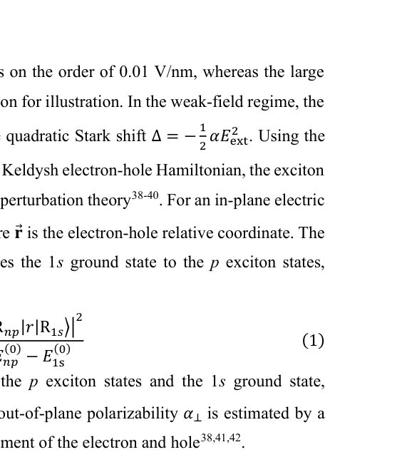
<figcaption class="paper-figure-caption"><b>Fig 1.</b> Fig. 4C shows the calculated 𝛼∥ and 𝛼ୄ as a function of the effective isotropic dielectric</figcaption>
</figure>
<figure class="paper-figure-card">
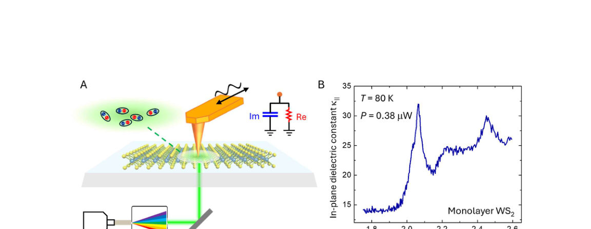
<figcaption class="paper-figure-caption"><b>Fig 2.</b> Fig. 1. iMIM configuration and GHz dielectric constant of excitons in monolayer WS2. (A)</figcaption>
</figure>
<figure class="paper-figure-card">
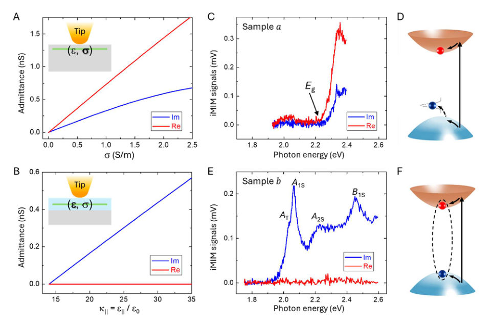
<figcaption class="paper-figure-caption"><b>Fig 3.</b> Fig. 2. Comparison of iMIM response between defect-rich and high-purity samples. (A)</figcaption>
</figure>
<figure class="paper-figure-card">
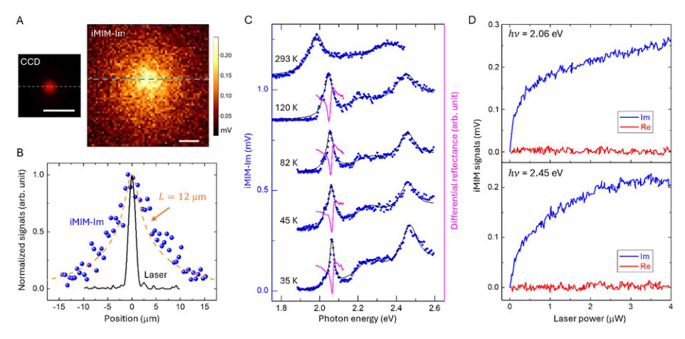
<figcaption class="paper-figure-caption"><b>Fig 4.</b> Fig. 3. Spatial diffusion mapping, temperature and laser-power dependence. (A) CCD image</figcaption>
</figure>
<figure class="paper-figure-card">
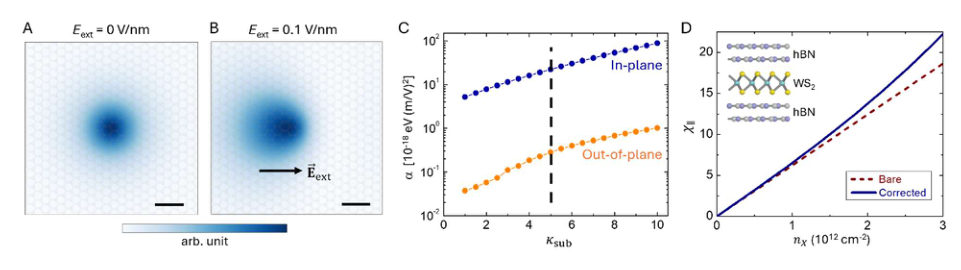
<figcaption class="paper-figure-caption"><b>Fig 5.</b> Fig. 4. Theoretical analysis of the exciton susceptibility in hBN-encapsulated monolayer WS2.</figcaption>
</figure>
</div>

<p><strong>Summary.</strong> This research introduces microwave impedance microscopy (iMIM) as a breakthrough, contact-free electrical technique to image dark excitons in 2D semiconductors like WS2. By measuring the material's complex permittivity, the authors successfully separated the purely dielectric exciton response from background conductivity. This establishes excitons as tunable dielectric elements and opens a new pathway for nanoscale quantum material characterization.</p>
<p><strong>Why it may be interesting.</strong> This work bridges solid-state physics (exciton dynamics) with microwave engineering, providing a novel, non-optical diagnostic tool for quantum materials that is highly relevant to condensed matter theory.</p>
<details>
<summary>Detailed structure</summary>
<p><strong>Main problem.</strong> The primary goal is to develop a contact-free electrical method to probe dark excitons in atomically thin semiconductors, which are typically only visible via optical spectroscopy.</p>
<p><strong>Main result.</strong> The authors successfully demonstrated that photoexcited excitons contribute a measurable, purely dielectric permittivity at microwave frequencies, allowing for nanoscale imaging of dark exciton transport.</p>
<p><strong>Method.</strong> The experiment utilizes laser-illuminated microwave impedance microscopy (iMIM) to measure the complex permittivity, which is complemented by first-principles DFT and GW-BSE calculations to model the exciton polarizability.</p>
<p><strong>Model / system.</strong> The system is monolayer tungsten disulfide (WS2) and other 2D semiconductors. The theoretical framework involves modeling the exciton polarizability using an effective Keldysh electron-hole Hamiltonian and relating it to the macroscopic dielectric response via Clausius-Mossotti-like relations.</p>
<p><strong>Key observables.</strong> The imaginary part of the tip admittance ($    ext{iMIM-Im}$) shows resonant peaks matching exciton spectra, while the real part ($    ext{iMIM-Re}$) remaining zero confirms a purely dielectric response, distinguishing it from photoconductivity.</p>
<p><strong>Important parameters / regimes.</strong> The measurements are performed at gigahertz frequencies, with spatial resolution achieving sub-100 nm, and the response is tunable by laser power and temperature.</p>
<p><strong>Assumptions / limitations.</strong> Key assumptions include the negligible out-of-plane polarizability compared to the in-plane component, and the use of the Clausius-Mossotti relation to link microscopic polarizability to macroscopic permittivity.</p>
<p><strong>Figures summary.</strong> Figures illustrate the schematic of the iMIM setup, the dependence of the effective dielectric constant on photon energy, and comparative maps showing the distinct purely dielectric response (high-purity) versus the conductive response (defect-rich) in the iMIM spectra.</p>
<p><strong>Paper structure.</strong> The paper progresses by first establishing the limitations of optical probing, then introducing the iMIM technique to measure the dielectric response, demonstrating the distinction between exciton-induced permittivity and conventional photoconductivity, and finally validating the findings through theoretical modeling of exciton polarizability.</p>
</details>
<details>
<summary>Abstract</summary>
<p>Excitons in atomically thin semiconductors are almost always probed through their optical signatures, because the short lifetimes of these transient quasiparticles are generally assumed to preclude electrical detection. Here we show that photoexcited excitons in monolayer tungsten disulfide produce a large, optically tunable permittivity at gigahertz frequencies, and that the effect provides a contact-free electrical route to imaging dark excitons at the nanoscale. Using laser-illuminated microwave impedance microscopy, we find that high-purity encapsulated flakes exhibit a purely dielectric response resonant with the exciton spectrum, whereas defect-rich samples are governed by conventional photoconductivity. Spatial mapping of diffusion and sublinear power dependence identify long-lived dark excitons as the dominant contributors, and first-principles modelling of exciton polarizability reproduces the measured susceptibility. Our results establish excitons as optically tunable dielectric elements and introduce microwave microscopy as a direct electrical probe of dark-exciton transport with sub-100 nm resolution.</p>
</details>
<p><sub><a href="#top">↑ back to top</a></sub></p>

<p><a id="paper-2609.24461"></a></p>
<h3 id="parallel-simulation-of-josephson-junctions-with-multiplicative-noise"><a href="http://arxiv.org/abs/2609.24461v1">Parallel Simulation of Josephson Junctions With Multiplicative Noise</a></h3>
<p><strong>Authors:</strong> Vincenzo Pierro, Luigi Troiano, Elena Mejuto Villa, Sergio Pagano, Giovanni Filatrella<br>
<strong>Type:</strong> theory · <strong>Category:</strong> statistical mechanics · <strong>PDF:</strong> <a href="https://arxiv.org/pdf/2609.24461v1">https://arxiv.org/pdf/2609.24461v1</a><br>
<strong>Analysis basis:</strong> full PDF text, analyzed in chunks
<strong>Topic relevance:</strong> <code>methods for driven-dissipative</code> <strong>3/5</strong> · <code>Keldysh / 2PI / non-Gaussian methods</code> <strong>1/5</strong> · <code>non-equilibrium universality</code> <strong>1/5</strong></p>
<div class="figure-strip-hint">↔ Scroll figures horizontally</div>
<div class="paper-figures-scroll">
<figure class="paper-figure-card">
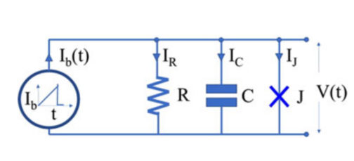
<figcaption class="paper-figure-caption"><b>Fig 1.</b> FIG. 1. Circuit model of a JJ with multiplicative noise. The sawtooth bias current is assumed noiseless, while the param- eter I0 of the JJ element randomly fluctuates as per (3).</figcaption>
</figure>
<figure class="paper-figure-card">
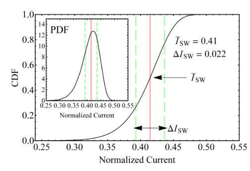
<figcaption class="paper-figure-caption"><b>Fig 2.</b> FIG. 2. CDF of the switching currents as a function of the bias current. The corresponding switching current distribution is shown in the inset. The values of the current distribution width ∆ISW and median ¯ISW are indicated by vertical lines.</figcaption>
</figure>
<figure class="paper-figure-card">
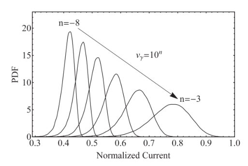
<figcaption class="paper-figure-caption"><b>Fig 3.</b> FIG. 3. Simulation results of the distributions of the current switches for increasing values of the current ramp speed vγ for Σ = 0.010.</figcaption>
</figure>
<figure class="paper-figure-card">
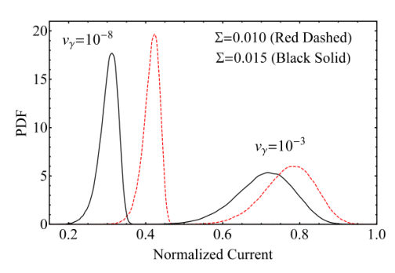
<figcaption class="paper-figure-caption"><b>Fig 4.</b> FIG. 4. Simulation results as a function of the multiplicative noise intensity Σ for two values of the current ramp speed, vγ = 10−8 and vγ = 10−3.</figcaption>
</figure>
</div>

<p><strong>Summary.</strong> This work develops a GPU-accelerated numerical technique to simulate the switching dynamics of Josephson junctions under multiplicative noise. By simulating the system's response to varying bias sweep rates and noise levels, the authors characterize how noise fundamentally alters the switching current distribution. This methodology is crucial for understanding noise effects in superconducting quantum devices.</p>
<p><strong>Why it may be interesting.</strong> The study provides a powerful, scalable numerical framework for analyzing non-equilibrium dynamics in superconducting circuits, which are central to quantum computing architectures. The comparison of noise effects across different rates is highly relevant for understanding decoherence mechanisms.</p>
<details>
<summary>Detailed structure</summary>
<p><strong>Main problem.</strong> The paper addresses the challenge of fast and accurate simulation of Josephson junction switching dynamics when subjected to multiplicative noise, for which analytical solutions are unavailable.</p>
<p><strong>Main result.</strong> GPU acceleration significantly speeds up simulations, allowing characterization of how multiplicative noise affects the switching current distribution, showing dependencies on both noise intensity and bias sweep rate.</p>
<p><strong>Method.</strong> The authors employed numerical simulation using the Euler-Maruyama method, parallelized across Graphics Processing Units (GPUs) via CUDA to handle extensive bias sweep rate variations.</p>
<p><strong>Model / system.</strong> The physical system is a Josephson Junction (JJ) modeled by a nonequilibrium washboard potential. The dynamics are governed by a stochastic differential equation incorporating multiplicative noise arising from fluctuations in the critical current.</p>
<p><strong>Key observables.</strong> The primary observables are the switching current distribution (characterized by median and width) and the comparison of the derived equivalent temperature ($T_{	ext{fit}}$) under different noise regimes.</p>
<p><strong>Important parameters / regimes.</strong> Key parameters include the noise amplitude ($\Sigma$), the bias sweep velocity ($v_\gamma$), and the junction parameters ($R, C, ar{I}_0$).</p>
<p><strong>Assumptions / limitations.</strong> The analysis assumes Gaussian fluctuations for the critical current and utilizes the Euler-Maruyama method for numerical integration.</p>
<p><strong>Figures summary.</strong> Figure 2 compares the Cumulative Distribution Function (CDF) of switching currents for noisy vs. non-noisy cases. Figure 3 shows how the PDF shifts with increasing bias sweep velocity ($v_\gamma$), and Figure 4 shows the effect of noise intensity ($\Sigma$) on the PDF.</p>
<p><strong>Paper structure.</strong> The paper establishes the physical model and governing equations, details the GPU-accelerated numerical simulation approach, presents results analyzing the effect of noise and sweep rate on the switching current distribution, and concludes by discussing the implications for noise modeling in superconducting devices.</p>
</details>
<details>
<summary>Abstract</summary>
<p>Parallel graphic processing units have been employed for fast simulations of the switching dynam- ics of Josephson junctions subject to critical current fluctuations. Such a system is modeled by a nonequilibrium washboard model with multiplicative noise, for which analytical results are lacking. The proposed approach allows us to execute extensive numerical simulation in short time and with relatively inexpensive resources. This allows us to fully characterize the effect of the noise on the junction switching current distributions at realistic bias current sweeprates.</p>
</details>
<p><sub><a href="#top">↑ back to top</a></sub></p>

<p><a id="paper-2609.24311"></a></p>
<h3 id="coexistence-and-interconversion-of-multiple-order-majorana-modes-in-topological-superconductor-films-with-varying-thickness"><a href="http://arxiv.org/abs/2609.24311v1">Coexistence and Interconversion of Multiple-Order Majorana Modes in Topological Superconductor Films with Varying Thickness</a></h3>
<p><strong>Authors:</strong> Zhizhong Ding, Chuanbao Zhang, Shunhong Zhang, Xiaoyu Zhu, Wei Qin, Ping Cui, Zhenyu Zhang<br>
<strong>Type:</strong> theory · <strong>Category:</strong> other · <strong>PDF:</strong> <a href="https://arxiv.org/pdf/2609.24311v1">https://arxiv.org/pdf/2609.24311v1</a><br>
<strong>Analysis basis:</strong> full PDF text, analyzed in chunks
<strong>Topic relevance:</strong> <code>analog quantum simulation</code> <strong>3/5</strong> · <code>Keldysh / 2PI / non-Gaussian methods</code> <strong>1/5</strong></p>
<div class="figure-strip-hint">↔ Scroll figures horizontally</div>
<div class="paper-figures-scroll">
<figure class="paper-figure-card">
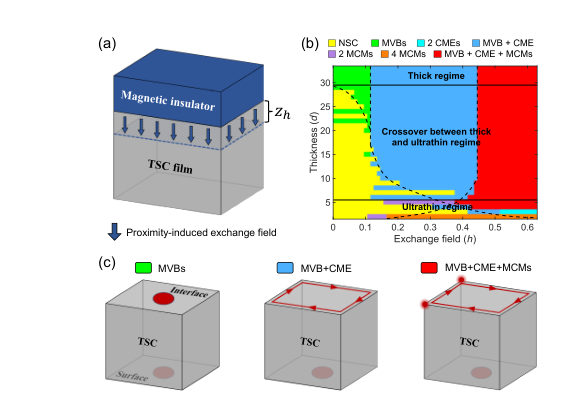
<figcaption class="paper-figure-caption"><b>Fig 1.</b> FIG. 1. (a) Schematic illustration of the magnetic insulator/C2h- symmetric topological superconductor (TSC) heterostructure, where zh represents the depth of the proximity-induced exchange field h penetrating into the TSC film. (b) Phase diagram of the topological superconductivity as spanned by a function of film thickness d and h. The solid lines separate different thickness regimes, while the dashed lines indicate boundaries between distinct topological phases. (c) Schematic illustrations of Majorana modes associated with the col- ored regions in (b). Left panel (green): two Majorana vortex bound states (MVBs) localized at the top interface and bottom surface of the TSC film. Middle...</figcaption>
</figure>
<figure class="paper-figure-card">
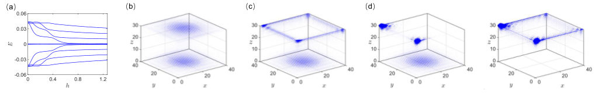
<figcaption class="paper-figure-caption"><b>Fig 2.</b> FIG. 2. (a) Energy spectrum of a 40×40×30 film as a function of the exchange field strength. (b),(c) Spatial distributions of the wavefunctions for the doubly degenerate zero-energy states at (b) h = 0 and (c) h = 0.4, respectively. (d) Spatial distributions of the wavefunctions for the quadruply degenerate zero-energy states at a representative strength of h = 1 in panel (a), as plotted in two sub-panels. In (b)-(d), the radii of the blue dots are proportional to the local densities.</figcaption>
</figure>
<figure class="paper-figure-card">
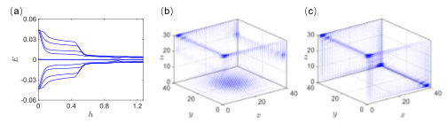
<figcaption class="paper-figure-caption"><b>Fig 3.</b> FIG. 3. (a) Energy spectrum of a 40×40×30 film as a function of the exchange field strength, with the penetration depth set to zh = 10. (b), (c) Spatial distributions of the doubly degenerate zero-energy wavefunctions at h = 0.4 with (b) zh = 10 and (c) zh = 30.</figcaption>
</figure>
<figure class="paper-figure-card">
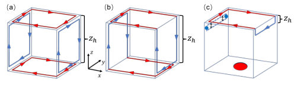
<figcaption class="paper-figure-caption"><b>Fig 4.</b> FIG. 4. (a) Schematic illustration of the four configurations of chi- ral Majorana edge modes (CMEs) when the exchange field penetrates through the whole system. (b) Merging and coexistence of CMEs on different hinges. (c) Schematic illustration of the formation of Ma- jorana corner modes when zh is sufficiently small. Here the left-side CME collapses and hybridizes due to finite-size effect, as indicated by the double arrows.</figcaption>
</figure>
<figure class="paper-figure-card">
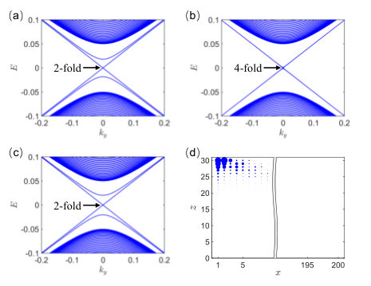
<figcaption class="paper-figure-caption"><b>Fig 5.</b> FIG. 5. One-dimensional quasiparticle band structures along the ky direction for (a) h = 0.3, (b) h = 0.4, and (c) h = 0.5. (d) Wave- function distribution of the chiral Majorana edge modes shown on the left side of the film, as indicated by the blue dashed lines in Fig. 4(c). These states participate in the closing and reopening of the gap shown in (a)-(c).</figcaption>
</figure>
</div>

<p><strong>Summary.</strong> This theoretical work explores how the thickness and symmetry of topological superconductor films dictate the emergence and interaction of multiple types of Majorana modes. By modeling 2M-WS2 coupled to magnetic insulators, the authors show that crystalline symmetry enables the simultaneous existence of first-, second-, and third-order Majorana modes. This control mechanism is crucial for advancing the realization of fault-tolerant quantum computation based on non-Abelian statistics.</p>
<p><strong>Why it may be interesting.</strong> The explicit control over multiple, distinct types of Majorana modes (vortex, edge, corner) via crystalline symmetry and thickness offers a highly tunable platform for realizing non-Abelian statistics, which is a key goal in topological quantum computation.</p>
<details>
<summary>Detailed structure</summary>
<p><strong>Main problem.</strong> The study investigates the thickness-dependent evolution, coexistence, and interconversion of multiple-order Majorana modes in topological superconductor films.</p>
<p><strong>Main result.</strong> The research demonstrates that the proper crystalline symmetry allows for the unprecedented coexistence of first-, second-, and third-order Majorana modes in a single platform, which can be controlled by film thickness and external fields.</p>
<p><strong>Method.</strong> The authors employ theoretical modeling using a properly constructed k.p model and perform numerical diagonalization of the resulting Bogoliubov-de Gennes Hamiltonian.</p>
<p><strong>Model / system.</strong> The system is a $C_{2h}$-symmetric topological superconductor film (like 2M-WS2) proximity coupled with magnetic insulators. The model incorporates the full BdG Hamiltonian, including proximity-induced exchange fields and s-wave pairing.</p>
<p><strong>Key observables.</strong> Zero-energy states, Majorana vortex bound states (MVBs), chiral Majorana edge modes (CMEs), and Majorana corner modes (MCMs).</p>
<p><strong>Important parameters / regimes.</strong> Film thickness ($d$), proximity-induced exchange field ($h$), and the penetration depth of the exchange field ($z_h$).</p>
<p><strong>Assumptions / limitations.</strong> The analysis relies on projecting the bulk Hamiltonian onto specific surfaces and assumes the validity of the k.p model description.</p>
<p><strong>Figures summary.</strong> Figure 1 presents a schematic of the heterostructure, a phase diagram mapping thickness and $h$ to different topological regimes, and illustrations of the coexisting Majorana modes. Figure 2 and 3 show energy spectra and wavefunctions for varying field strengths and thicknesses.</p>
<p><strong>Paper structure.</strong> The paper is structured by physical regimes: the thick-film regime showing mode coexistence, the crossover regime analyzing critical field dependence on thickness, and the ultrathin-film regime exploring thickness-dependent $Z_2$ phases and electric field tuning.</p>
</details>
<details>
<summary>Abstract</summary>
<p>We theoretically investigate the thickness-dependent evolution of Majorana modes in $C_{2h}$-symmetric topological superconductor films (such as the recently discovered 2M-WS$_2$) proximity coupled with magnetic insulators. For sufficiently thick films, two Majorana bound states coexist as end modes at the surface and interface along a vortex line, with the interfacial mode evolving into a chiral Majorana edge mode upon increasing the proximity-induced exchange field. The intrinsic $C_{2h}$ crystalline symmetry selects two chiral Majorana modes circulating along the hinges on two of the four side surfaces of the film. When the penetration depth of the exchange field is sufficiently shallow, the two circulating modes are localized near the interface, but with qualitatively different subsequent evolutions. One of them further collapses to form two Majorana corner modes, while the other merges with the chiral Majorana mode circulating around the interface. Importantly, the corner modes are well decoupled from the interfacial chiral mode, thereby enabling an unprecedented coexistence of first-, second-, and third-order Majorana modes within a single material platform. We further show that such coexistence persists even in the ultrathin-film limit, where the electric-field-controlled two-dimensional $Z_2$ topology offers an extra advantage to readily interconvert the multiple-order Majorana modes. These findings highlight the pivotal role of the proper crystalline symmetry in enabling emergence, manipulation, and potential braiding of Majorana modes for demonstrating non-Abelian statistics and fault-tolerant quantum computation.</p>
</details>
<p><sub><a href="#top">↑ back to top</a></sub></p>

<p><a id="paper-2609.24827"></a></p>
<h3 id="generalized-conditions-for-odd-frequency-pairing-in-superconducting-systems"><a href="http://arxiv.org/abs/2609.24827v1">Generalized conditions for odd-frequency pairing in superconducting systems</a></h3>
<p><strong>Authors:</strong> Florian Kayatz, Annica M. Black-Schaffer, Jorge Cayao<br>
<strong>Type:</strong> theory · <strong>Category:</strong> other · <strong>PDF:</strong> <a href="https://arxiv.org/pdf/2609.24827v1">https://arxiv.org/pdf/2609.24827v1</a><br>
<strong>Analysis basis:</strong> full PDF text, analyzed in chunks
<strong>Topic relevance:</strong> <code>Keldysh / 2PI / non-Gaussian methods</code> <strong>3/5</strong></p>
<div class="figure-strip-hint">↔ Scroll figures horizontally</div>
<div class="paper-figures-scroll">
<figure class="paper-figure-card">
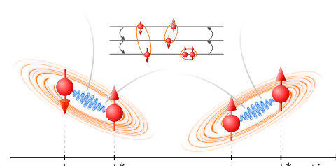
<figcaption class="paper-figure-caption"><b>Fig 1.</b> Figure 1. Sketch illustrating odd-frequency pairing, formed by an interaction at different times ti and t∗ i . Odd-frequency pairing states are encountered when additional degrees of free- dom are present, here indicated by multiple bands.</figcaption>
</figure>
<figure class="paper-figure-card">
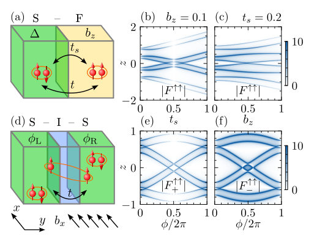
<figcaption class="paper-figure-caption"><b>Fig 2.</b> Figure 2. (a) SF junction with spin-preserving t and spin-flip ts tunneling, order parameter ∆in S and spin-splitting bz in F. (b,c) Absolute value of F↑↑as a function of frequency z and (b) ts or (c) bz for εS = 0.1, εF = 0.2, ∆= 0.4 and t = 0.5. (d) Josephson junction with phases ϕL and ϕR across an insulator I in an in-plane magnetic field bx. (e,f) Absolute value of odd- frequency F ↑↑ + and even-frequency F ↑↑ − pair amplitudes as a function of z and ϕ = ϕR −ϕL across junction in (b) for ε = 0.1, t = 0.4, ∆= 0.4, and bx = 0.1.</figcaption>
</figure>
<figure class="paper-figure-card">
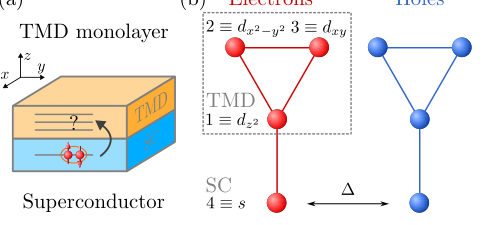
<figcaption class="paper-figure-caption"><b>Fig 3.</b> Figure 3. (a) TMD monolayer (orange) proximitized to a conventional superconductor (blue). (b) Electron (red) and hole (blue) orbitals with solid lines indicating the hopping. Orbitals (1, 2, 3) model the TMD monolayer, and orbital four (4) models the superconductor with order parameter ∆.</figcaption>
</figure>
<figure class="paper-figure-card">
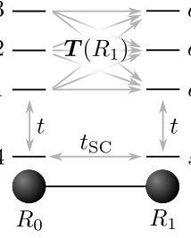
<figcaption class="paper-figure-caption"><b>Fig 4.</b> Figure 4. Sketch illustrating the nearest-neighbor hop- ping amplitudes T (R1) between the central site R0 and the nearest-neighbor site R1, with the labeling of the TMD and SC orbitals with indices i = 1, 2, 3, 4.</figcaption>
</figure>
</div>

<p><strong>Summary.</strong> This work establishes generalized, necessary, and sufficient conditions for odd-frequency superconducting pairing applicable to all superconducting structures. By analyzing various physical systems like SF junctions and TMDs, the authors demonstrate that the non-zero commutator of the normal and superconducting Hamiltonians dictates the presence of this exotic pairing state. This advances the theoretical understanding of unconventional superconductivity signatures.</p>
<p><strong>Why it may be interesting.</strong> The rigorous derivation of a universal condition for odd-frequency pairing provides a powerful theoretical tool for understanding unconventional superconductivity, which is a major topic in condensed matter physics.</p>
<details>
<summary>Detailed structure</summary>
<p><strong>Main problem.</strong> To derive generalized necessary and sufficient conditions for the existence of odd-frequency superconducting pairing in any superconducting system.</p>
<p><strong>Main result.</strong> The condition for odd-frequency pairing is found to be the non-zero commutator $[\hat{h}, \hat{\Delta}]^* 
eq 0$, which holds regardless of the order parameter expansion or system complexity.</p>
<p><strong>Method.</strong> The authors use Green's function theory, employing Neumann series and high-frequency expansions of the Bogoliubov-de Gennes Hamiltonian to analyze the anomalous electron-hole Green's functions.</p>
<p><strong>Model / system.</strong> The theory is applied to diverse superconducting systems, including bulk superconductors, superconducting-ferromagnet (SF) junctions, Josephson junctions, and TMD monolayers proximitized by conventional superconductors.</p>
<p><strong>Key observables.</strong> Odd-frequency pair amplitudes ($F_{ij}(z)$), paramagnetic Meissner response, and the commutator $[\hat{h}, \hat{\Delta}]^*$.</p>
<p><strong>Important parameters / regimes.</strong> Superconducting gap ($\Delta$), magnetic field ($b_x$), and various hopping/tunneling amplitudes ($t, t_s, \Delta$).</p>
<p><strong>Assumptions / limitations.</strong> The analysis relies on expanding the Green's functions in powers of the order parameter ($\hat{\Delta}$) and utilizing high-frequency approximations for computational tractability.</p>
<p><strong>Figures summary.</strong> Figures illustrate the absolute value of the pair amplitude $F_{\uparrow\uparrow}$ versus frequency $z$ for specific couplings (like $t_s$ or $b_z$) in junction models.</p>
<p><strong>Paper structure.</strong> The paper first derives the general condition using Green's functions, then applies this condition systematically to model junctions (SF and Josephson) and advanced materials (TMDs) to confirm the theoretical predictions.</p>
</details>
<details>
<summary>Abstract</summary>
<p>Odd-frequency superconducting pairing has been predicted to arise in many systems and is known to lead to phenomena such as paramagnetic Meissner response and long-range superconducting proximity effect. Here, we provide generalized necessary and sufficient conditions for odd-frequency pairing appearing in any superconducting system, from bulk superconductors to superconducting hybrid structures. This generalizes an earlier first-order expression in multiband bulk superconductors to all superconducting systems and to all orders, in both order parameter and frequency. We then apply the derived conditions to several systems, including superconducting-ferromagnet and superconducting Josephson junctions, as well as a transition metal dichalcogenide monolayer proximitized by a conventional superconductor, where the generalized conditions are used to understand the properties of the superconducting state.</p>
</details>
<p><sub><a href="#top">↑ back to top</a></sub></p>

<p><a id="paper-2609.24734"></a></p>
<h3 id="observation-of-kondo-effect-in-rhombohedral-graphene-superlattices"><a href="http://arxiv.org/abs/2609.24734v1">Observation of Kondo Effect in Rhombohedral Graphene Superlattices</a></h3>
<p><strong>Authors:</strong> Xin Liao, Qing Yin, Huiwen Wang, Jing-Wei Dong, Jun-Xi Chen, Si-Li Wu, Cai-Zhen Li, Guowei Lyu, Kenji Watanabe, Takashi Taniguchi, Wei Jiang, Yu-Gui Yao, Zhi-Min Liao<br>
<strong>Type:</strong> experiment · <strong>Category:</strong> strongly correlated electrons · <strong>PDF:</strong> <a href="https://arxiv.org/pdf/2609.24734v1">https://arxiv.org/pdf/2609.24734v1</a><br>
<strong>Analysis basis:</strong> full PDF text, analyzed in chunks
<strong>Topic relevance:</strong> <code>analog quantum simulation</code> <strong>3/5</strong></p>
<div class="figure-strip-hint">↔ Scroll figures horizontally</div>
<div class="paper-figures-scroll">
<figure class="paper-figure-card">
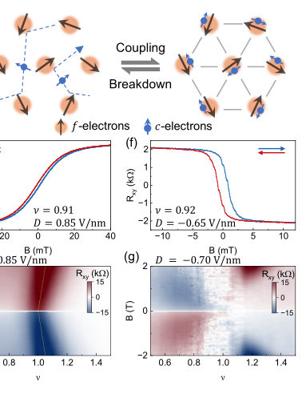
<figcaption class="paper-figure-caption"><b>Fig 1.</b> FIG. 1. (a) Schematic of the dual-gated Rgr/hBN moiré superlattice device. The</figcaption>
</figure>
<figure class="paper-figure-card">

<figcaption class="paper-figure-caption"><b>Fig 2.</b> Figure 2(f) shows the dependence of 𝐵𝑐 and the coefficient 𝐴 on 𝜈. The decrease of</figcaption>
</figure>
<figure class="paper-figure-card">
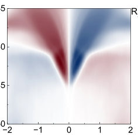
<figcaption class="paper-figure-caption"><b>Fig 3.</b> FIG. 3. (a, b) Symmetrized 𝑅𝑥𝑥 (a) and anti-symmetrized 𝑅𝑥𝑦 (b) maps as functions</figcaption>
</figure>
</div>

<p><strong>Summary.</strong> This paper reports experimental evidence of the Kondo effect in graphene moiré superlattices by measuring magnetotransport properties. The key findings include characteristic resistance anomalies and a transition to heavy fermion liquid behavior, all explained by the breakdown of Kondo singlets. This work establishes moiré systems as a powerful platform for studying strongly correlated quantum phases.</p>
<p><strong>Why it may be interesting.</strong> The work provides direct experimental evidence of Kondo physics in a solid-state moiré system, offering a solid-state platform to study heavy fermion physics and correlated electron behavior, which is highly relevant to many-body dynamics.</p>
<details>
<summary>Detailed structure</summary>
<p><strong>Main problem.</strong> The paper aims to experimentally observe and characterize the Kondo effect in a highly tunable platform to understand exotic correlated quantum phases.</p>
<p><strong>Main result.</strong> The authors demonstrated Kondo interactions via characteristic transport signatures, including magnetoresistance transitions and temperature-dependent resistance following heavy fermion liquid behavior.</p>
<p><strong>Method.</strong> The study employed magneto-transport and temperature-dependent measurements on moiré superlattices, analyzing the evolution of longitudinal and Hall resistances.</p>
<p><strong>Model / system.</strong> The physical system is hexalayer rhombohedral graphene moiré superlattices encapsulated between hBN, which create a tunable moiré potential hosting flat bands that act as a Kondo lattice.</p>
<p><strong>Key observables.</strong> Magnetoresistance (increase-decrease transition), Hall resistance sign reversal, and $R_{xx}$ showing initial logarithmic increase followed by $T^2$ behavior.</p>
<p><strong>Important parameters / regimes.</strong> Carrier density ($n$), displacement electric field ($D$), and magnetic field ($B$) are key tuning parameters, with measurements focused near filling factor $
u=2$.</p>
<p><strong>Assumptions / limitations.</strong> The observed behaviors are consistently explained by the breakdown of Kondo singlets induced by magnetic field or temperature, leading to enhanced conductivity.</p>
<p><strong>Figures summary.</strong> Figures map $R_{xx}$ and $R_{xy}$ vs. $
u$ and $B$, and show line cuts illustrating the M-shaped evolution of resistance with $B$, alongside $R_{xx}$ vs. $T$ plots.</p>
<p><strong>Paper structure.</strong> The paper systematically presents transport measurements across varying magnetic fields, temperatures, and external electric fields, correlating the observed anomalies with the theoretical framework of Kondo singlet breakdown.</p>
</details>
<details>
<summary>Abstract</summary>
<p>Kondo effect in strongly correlated systems arises from the antiferromagnetic coupling between itinerant conduction electrons and localized magnetic moments, giving rise to a variety of exotic quantum phenomena. Two-dimensional moiré superlattice systems provide a highly tunable platform featuring topological flat bands, where Wannier orbitals are spatially confined by the periodic moiré potential and serve as localized magnetic moments, enabling the observable Kondo effect. Here we experimentally demonstrate Kondo interactions in hexalayer rhombohedral graphene moiré superlattices through magneto-transport and temperature-dependent measurements. With increasing magnetic field, the magnetoresistance exhibits an increase-decrease transition across a critical field B_c, while the Hall resistance R_xy undergoes a sign reversal near B_c. Moreover, as temperature decreases, the longitudinal resistance R_xx first increases logarithmically and then decreases following a T^2 behavior, indicating a transition to heavy fermion liquid. These behaviors can be consistently explained by the breakdown of Kondo singlets induced by either magnetic field or temperature, which liberates carriers previously bound to localized moments, thereby enhancing conductivity and altering the dominant carrier type. Furthermore, our results demonstrate that the Kondo interaction can be continuously tuned by both carrier density n and displacement electric field D, and suggest the emergence of a Kondo insulating state. Our findings provide deep insight into the Kondo effect in moiré engineered flat-band systems, paving the path for exploring exotic correlated quantum phases.</p>
</details>
<p><sub><a href="#top">↑ back to top</a></sub></p>

<p><a id="paper-2609.24607"></a></p>
<h3 id="new-theoretical-model-of-the-dynamic-anomalies-in-htc-superconductors"><a href="http://arxiv.org/abs/2609.24607v1">New theoretical model of the dynamic anomalies in HTc superconductors</a></h3>
<p><strong>Authors:</strong> J. Sosnowski<br>
<strong>Type:</strong> theory · <strong>Category:</strong> strongly correlated electrons · <strong>PDF:</strong> <a href="https://arxiv.org/pdf/2609.24607v1">https://arxiv.org/pdf/2609.24607v1</a><br>
<strong>Analysis basis:</strong> full PDF text, analyzed in chunks
<strong>Topic relevance:</strong> <code>Keldysh / 2PI / non-Gaussian methods</code> <strong>2/5</strong> · <code>driven-dissipative phase transition</code> <strong>2/5</strong> · <code>methods for driven-dissipative</code> <strong>2/5</strong> · <code>non-equilibrium universality</code> <strong>2/5</strong> · <code>Frenkel-Kontorova</code> <strong>1/5</strong> · <code>analog quantum simulation</code> <strong>1/5</strong> · <code>correlated / nonlocal dissipation</code> <strong>1/5</strong> · <code>quantum measurements</code> <strong>1/5</strong> · <code>scars &amp; prethermalization</code> <strong>1/5</strong></p>
<div class="figure-strip-hint">↔ Scroll figures horizontally</div>
<div class="paper-figures-scroll">
<figure class="paper-figure-card">
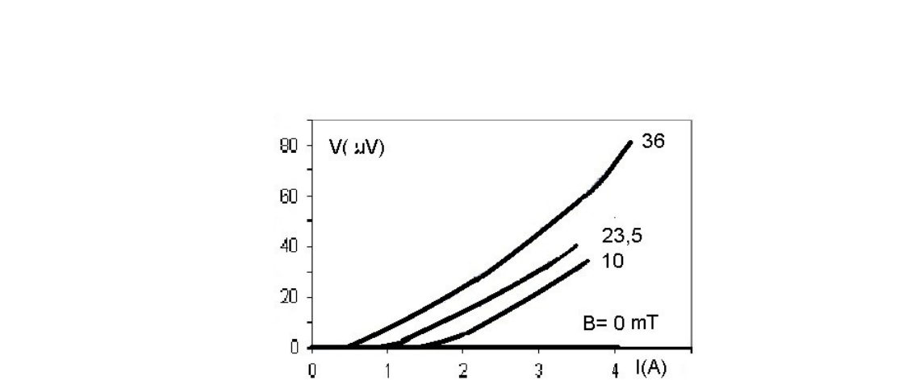
<figcaption class="paper-figure-caption"><b>Fig 1.</b> Fig. 1. Current-voltage characteristics of YBa2Cu3O7-x ceramic in external magnetic field at liquid nitrogen temperature</figcaption>
</figure>
<figure class="paper-figure-card">
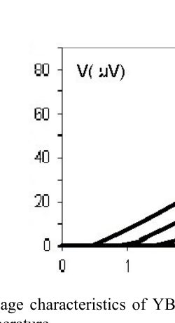
<figcaption class="paper-figure-caption"><b>Fig 2.</b> Fig. 2. Superconducting transition curve of YBaCuO sample</figcaption>
</figure>
<figure class="paper-figure-card">
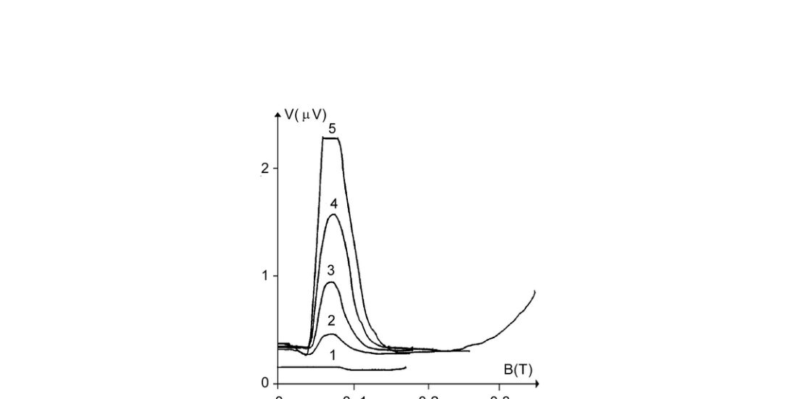
<figcaption class="paper-figure-caption"><b>Fig 3.</b> Fig. 3. Typical dynamic anomalies measured previously [1] of the I-V curves of YBaCuO superconductor in linearly slowly sweeping magnetic field for various values of transport current: (1) 110 mA, (2) 130 mA, (3) 140 mA, (4) 150 mA, (5) 160 mA and T= 45 K .</figcaption>
</figure>
<figure class="paper-figure-card">
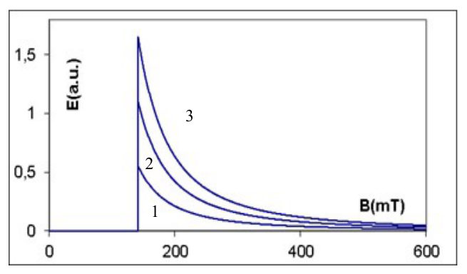
<figcaption class="paper-figure-caption"><b>Fig 4.</b> Fig. 4. Calculated dependence of the shape of the dynamical anomalies of I-V characteristics in varying magnetic field on the transport current amplitude: (1) 100 mA, (2) 200 mA, (3) 300 mA</figcaption>
</figure>
<figure class="paper-figure-card">
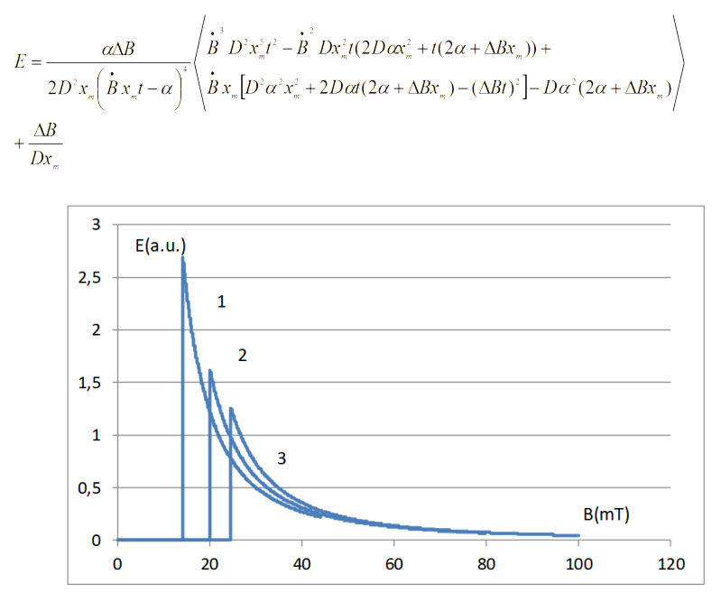
<figcaption class="paper-figure-caption"><b>Fig 5.</b> Fig. 5. Theoretically predicted influence of the magnetic field sweep rate on the dynamic anomalies of the current-voltage characteristics for HTc superconductors: (1) 10 mT/s, (2) 20 mT/s, (3) 30 mT/s</figcaption>
</figure>
</div>

<p><strong>Summary.</strong> This paper develops a novel theoretical model to explain dynamic anomalies in the I-V curves of High-Temperature Superconductors under changing magnetic fields. By analyzing magnetic flux penetration using diffusion equations and critical state models, the authors show that the anomalies are highly sensitive to the rate of field change and the magnitude of the transport current. This provides a powerful diagnostic tool for studying vortex dynamics in these materials.</p>
<p><strong>Why it may be interesting.</strong> While focused on superconductivity, the underlying physics involves non-equilibrium dynamics, flux flow, and critical state modeling, which share mathematical parallels with understanding dissipation and dynamics in complex quantum many-body systems.</p>
<details>
<summary>Detailed structure</summary>
<p><strong>Main problem.</strong> The paper proposes a new theoretical model to explain the dynamic anomalies observed in the current-voltage (I-V) characteristics of High-Temperature Superconductors (HTc) when subjected to slowly varying magnetic fields.</p>
<p><strong>Main result.</strong> The model successfully predicts the dependence of these anomalies on the magnetic field sweep rate and transport current amplitude, offering a diagnostic tool sensitive to the dynamics of magnetic flux penetration.</p>
<p><strong>Method.</strong> The analysis combines solving the magnetic diffusion equation with an independent analysis using the phenomenological critical state model.</p>
<p><strong>Model / system.</strong> The physical system is an HTc superconducting slab. The model analyzes magnetic flux penetration into this slab, deriving the electric field (E) under both non-saturated and saturated penetration regimes.</p>
<p><strong>Key observables.</strong> Dynamic anomalies in the I-V characteristics, and the generated electric field (E).</p>
<p><strong>Important parameters / regimes.</strong> Magnetic field sweep rate, transport current amplitude, and material parameters like the magnetic diffusion coefficient (D), $B_0$, $\gamma$, and $eta$.</p>
<p><strong>Assumptions / limitations.</strong> The magnetic field is assumed to be applied perpendicular to the superconducting surface.</p>
<p><strong>Figures summary.</strong> Figures illustrate the dependence of anomalies on transport current (Fig. 4), magnetic field sweep rate (Fig. 5), and the influence of material parameters ($B_0, eta, \gamma$) (Figs. 7-9).</p>
<p><strong>Paper structure.</strong> The paper first introduces the problem using measured I-V curves (Fig. 1, 3). It then develops the theoretical framework by solving the diffusion equation (Eq. 1) and deriving E (Eqs. 4, 7). Finally, it compares these results with the critical state model (Eq. 9) and demonstrates the model's predictive power across various parameter variations.</p>
</details>
<details>
<summary>Abstract</summary>
<p>New theoretical model of the dynamic current-voltage characteristics anomalies in HTc superconductors in slowly varying magnetic field has been proposed. The model is based on an analysis in details of the magnetic flux penetration into HTc superconducting slab in such case. The comparison of model with previous experimental data has been presented. Theoretical analysis resulting from a new solution of diffusion equation is given as well as other one based on phenomenological critical state model.</p>
</details>
<p><sub><a href="#top">↑ back to top</a></sub></p>

<p><a id="paper-2609.24671"></a></p>
<h3 id="frequency-bursts-in-adaptive-delay-coupled-oscillators"><a href="http://arxiv.org/abs/2609.24671v1">Frequency bursts in adaptive delay-coupled oscillators</a></h3>
<p><strong>Authors:</strong> Yu Wang, Jan Sieber, Jinde Cao, Jürgen Kurth, Serhiy Yanchuk<br>
<strong>Type:</strong> theory · <strong>Category:</strong> other · <strong>PDF:</strong> <a href="https://arxiv.org/pdf/2609.24671v1">https://arxiv.org/pdf/2609.24671v1</a><br>
<strong>Analysis basis:</strong> full PDF text, analyzed in chunks
<strong>Topic relevance:</strong> <code>analog quantum simulation</code> <strong>2/5</strong> · <code>driven-dissipative phase transition</code> <strong>2/5</strong> · <code>non-equilibrium universality</code> <strong>2/5</strong> · <code>Frenkel-Kontorova</code> <strong>1/5</strong> · <code>Keldysh / 2PI / non-Gaussian methods</code> <strong>1/5</strong> · <code>correlated / nonlocal dissipation</code> <strong>1/5</strong> · <code>methods for driven-dissipative</code> <strong>1/5</strong> · <code>scars &amp; prethermalization</code> <strong>1/5</strong></p>
<div class="figure-strip-hint">↔ Scroll figures horizontally</div>
<div class="paper-figures-scroll">
<figure class="paper-figure-card">
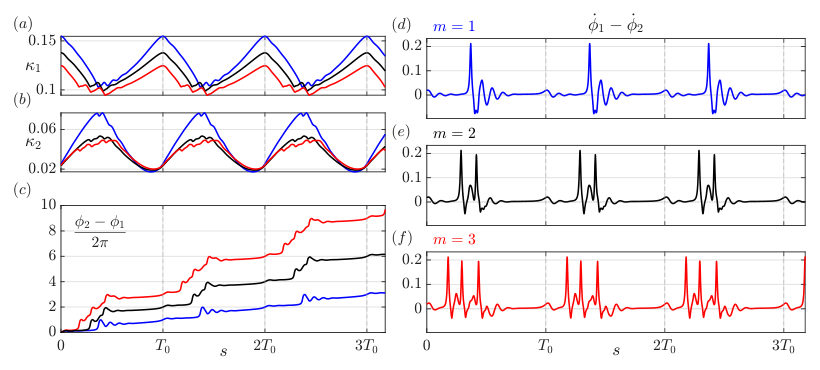
<figcaption class="paper-figure-caption"><b>Fig 1.</b> Fig. 1: Representative frequency-bursting oscillations with winding numbers m = 1 (blue), m = 2 (black), and m = 3 (red). For comparison, time is normalized as s = T0(t −t0)/Tm, where Tm is the period of each oscillation and T0 is the common normalized period. Panels (a) and (b) show the adaptive coupling variables κ1 and κ2, while panel (c) shows the accumulated relative winding W∆(t) defined in Eq. (8), with a net increase of m over each slow period. Panels (d)–(f) show the corresponding instantaneous relative frequencies ˙ϕ1(t) −˙ϕ2(t) for m = 1, 2, 3, respectively. The three cases are m = 1 for (a1, a2) = (0.4, 0.4), m = 2 for (a1, a2) = (0.3, 0.27), and m = 3 for (a1, a2) = (0.245,...</figcaption>
</figure>
<figure class="paper-figure-card">
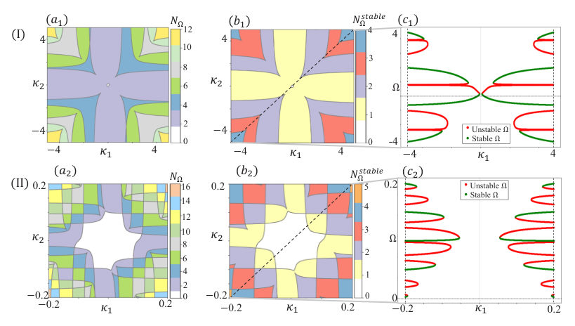
<figcaption class="paper-figure-caption"><b>Fig 2.</b> Fig. 2: Critical-manifold structure for two delay values: (I) τ = 1 and (II) τ = 40. Panels (a1) and (a2) show the number of fast relative equilibria (NΩ) for each parameter pair (κ1, κ2), while panels (b1) and (b2) show the number of stable fast relative equilibria Nstable Ω . The color bars indicate distinct values of NΩand Nstable Ω , and white regions contain no such oscillations. Gray curves denote the projections of fold boundaries, where two fast relative equilibrium branches merge. Panels (c1) and (c2) show cross- sections with κ1 = κ2 of the critical manifolds, resolving overlapping projections into distinct branches Ωℓin the (κ1, Ω)-plane. The remaining parameters are ω1 = 0.2, ω2...</figcaption>
</figure>
<figure class="paper-figure-card">
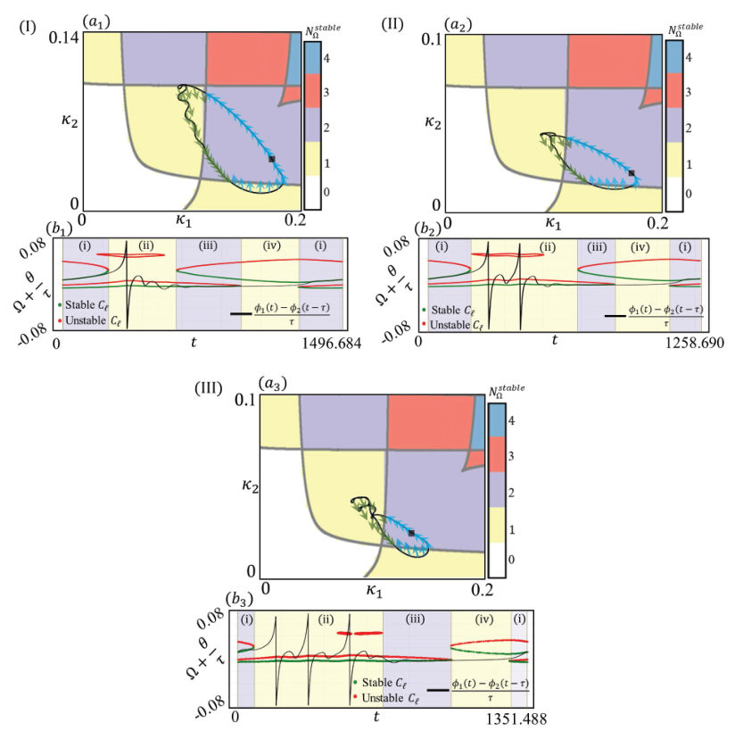
<figcaption class="paper-figure-caption"><b>Fig 3.</b> Fig. 3: Representative FB orbits with different number of frequency spikes m. Cases (I)–(III) correspond to m = 1, 2, and 3, with (a1, a2) = (0.5, 0.4), (0.3, 0.25), and (0.25, 0.26), respectively. Panels (a) show the orbits projected onto the (κ1, κ2)-plane and superimposed on the critical-manifold structure shown in Fig. 2(II)(b). The black closed curve represents one period of the slow evolution, and the black square marks its initial and final point. Blue and green arrows indicate the two stable reduced vector fields. Panels (b1)–(b3) show the corresponding evolution of the delayed relative phase [ ϕ1(t)−ϕ2(t−τ) ] /τ. Green and red lines show stable and unstable sheets of the critical...</figcaption>
</figure>
<figure class="paper-figure-card">
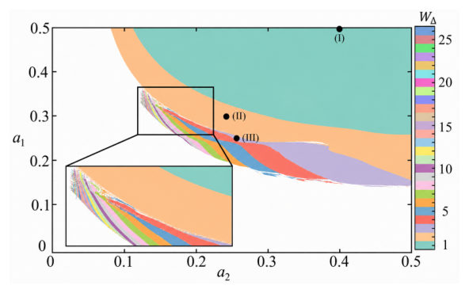
<figcaption class="paper-figure-caption"><b>Fig 4.</b> Fig. 4: FB oscillations in the (a1, a2) parameter plane. The oscillations are obtained starting from the fixed initial condition (21). Colors indicate the integer value W∆(Tm) = m defined in (8), while white regions denote parameter values for which no FB oscillation was detected. The fixed parameters are α = π/4, β = −π/2, ω1 = 0.2, ω2 = 0.1, τ = 40, and ϵ = 4 × 10−4. Points (I)–(III) correspond to the representative solutions in Fig. 3. The map therefore represents the attracting state selected by this fixed numerical scan and does not exclude coexisting attractors associated with other initial histories. The inset enlarges a region where FB domains with different m appear to accumulate.</figcaption>
</figure>
<figure class="paper-figure-card">
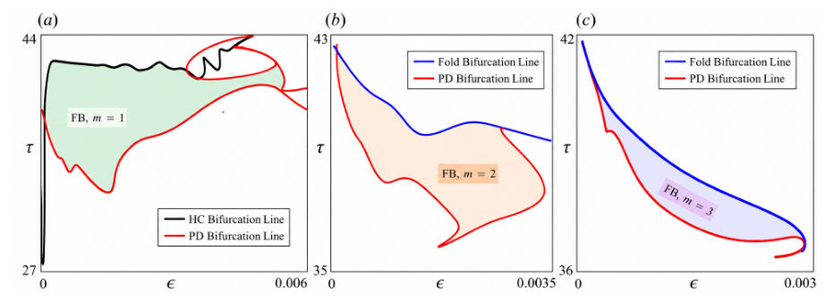
<figcaption class="paper-figure-caption"><b>Fig 5.</b> Fig. 5: Numerical continuation of three representative FB orbits using DDE-BifTool. Panels (a)–(c) show the corresponding stability diagrams in the (ϵ, τ) plane for burst size m = 1, m = 2, and m = 3, respectively. The shaded regions indicate parameter domains in which the corresponding FB orbits are stable. Red, blue, and black curves denote period-doubling (PD), homoclinic (HC), and fold bifurcations, respectively.</figcaption>
</figure>
</div>

<p><strong>Summary.</strong> This work analyzes frequency bursting oscillations in adaptively coupled, delayed phase oscillators. Using fast-slow analysis, the authors show that the system's detuning is quantized to integer multiples of a small frequency scale. This phenomenon arises from the interplay between slow adaptation and fast transitions between stable dynamical states.</p>
<p><strong>Why it may be interesting.</strong> The study of complex, non-equilibrium dynamics in coupled oscillators, especially those involving adaptation and delays, provides mathematical tools applicable to modeling quantum coherence loss or energy transfer in open quantum systems.</p>
<details>
<summary>Detailed structure</summary>
<p><strong>Main problem.</strong> The paper investigates the emergence and characteristics of frequency bursting oscillations in a system of phase oscillators coupled adaptively and with time delays.</p>
<p><strong>Main result.</strong> The system robustly achieves a state where oscillator frequencies are nearly synchronized but detuned by an integer multiple of small adaptation frequencies, a quantization caused by alternating slow and fast transitions.</p>
<p><strong>Method.</strong> The analysis employs multiscale methods and a fast-slow decomposition to analyze the dynamics, focusing on relative equilibria and relative periodic solutions.</p>
<p><strong>Model / system.</strong> The model is a reduced variant of the adaptive Kuramoto–Sakaguchi model for two adaptively delay-coupled phase oscillators, exhibiting a slow-fast structure.</p>
<p><strong>Key observables.</strong> Frequency bursting (FB), mean frequency detuning ($\Omega_1 - \Omega_2$), winding number ($m$), and instantaneous relative frequencies.</p>
<p><strong>Important parameters / regimes.</strong> The small parameter $\epsilon$ (separating timescales), and the time delay $  au$.</p>
<p><strong>Assumptions / limitations.</strong> The analysis assumes a separation of timescales ($\epsilon \ll 1$) and models the system using a minimal structure incorporating adaptive coupling and delay.</p>
<p><strong>Figures summary.</strong> Figure 1 illustrates representative FB oscillations for $m=1, 2, 3$, showing the accumulated relative winding and instantaneous relative frequencies. Figure 2 details the critical-manifold structure.</p>
<p><strong>Paper structure.</strong> The paper analyzes the slow-fast dynamics, deriving fast relative equilibria and characterizing the slow evolution along critical manifolds, leading to the identification of the quantized detuning mechanism.</p>
</details>
<details>
<summary>Abstract</summary>
<p>We report on frequency bursting oscillations in a system of phase oscillators with adaptive and delayed coupling. Adaptation of the coupling strengths is considered slow and depends on the phase shift between the oscillators. We find due to the combined chain of adaptation, collective dynamics, and time delays, the system robustly achieves a state in which the oscillator's frequencies are nearly synchronized but detuned by an integer number of small adaptation frequencies. We demonstrate that this quantization of the detuning is caused by alternating slow and fast transitions. Moreover, the observed motions take the form of bursts of instantaneous frequency, and the number of spikes in each burst corresponds to the quantization level of the detuning. We provide a fast-slow analysis of this phenomenon and explain the mechanisms behind the emergence of bursts. Our findings indicate that these frequency bursting oscillations are robust and exist stably within finite parameter regions.</p>
</details>
<p><sub><a href="#top">↑ back to top</a></sub></p>

<p><a id="paper-2609.22779"></a></p>
<h3 id="variational-nonlinearities-and-wave-selection-at-an-math1809math-hopf-bifurcation"><a href="http://arxiv.org/abs/2609.22779v1">Variational Nonlinearities and Wave Selection at an $O(2)$-Hopf Bifurcation</a></h3>
<p><strong>Authors:</strong> Taylan Şengül<br>
<strong>Type:</strong> theory · <strong>Category:</strong> other · <strong>PDF:</strong> <a href="https://arxiv.org/pdf/2609.22779v1">https://arxiv.org/pdf/2609.22779v1</a><br>
<strong>Analysis basis:</strong> full PDF text, analyzed in chunks
<strong>Topic relevance:</strong> <code>Keldysh / 2PI / non-Gaussian methods</code> <strong>2/5</strong> · <code>methods for driven-dissipative</code> <strong>2/5</strong> · <code>driven-dissipative phase transition</code> <strong>1/5</strong> · <code>non-equilibrium universality</code> <strong>1/5</strong></p>
<div class="figure-strip-hint">↔ Scroll figures horizontally</div>
<div class="paper-figures-scroll">
<figure class="paper-figure-card">
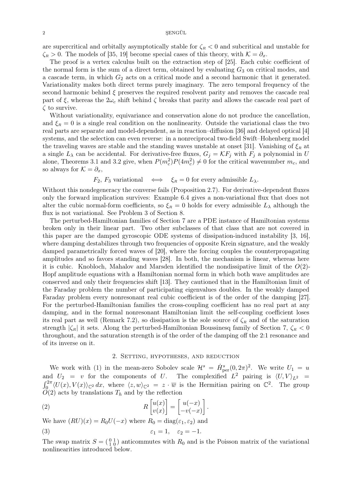
<figcaption class="paper-figure-caption"><b>Fig 1.</b> Low-resolution page preview, page 2</figcaption>
</figure>
<figure class="paper-figure-card">

<figcaption class="paper-figure-caption"><b>Fig 2.</b> Low-resolution page preview, page 3</figcaption>
</figure>
<figure class="paper-figure-card">
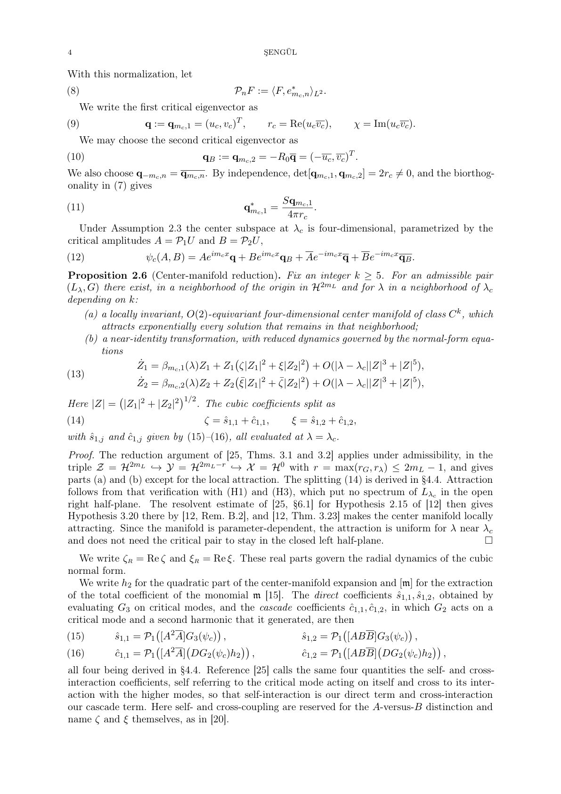
<figcaption class="paper-figure-caption"><b>Fig 3.</b> Low-resolution page preview, page 4</figcaption>
</figure>
<figure class="paper-figure-card">
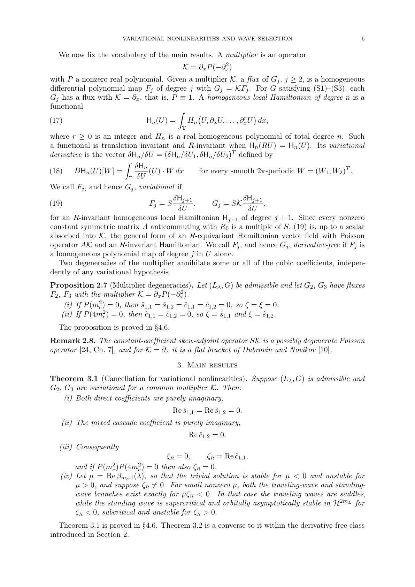
<figcaption class="paper-figure-caption"><b>Fig 4.</b> Low-resolution page preview, page 5</figcaption>
</figure>
<figure class="paper-figure-card">
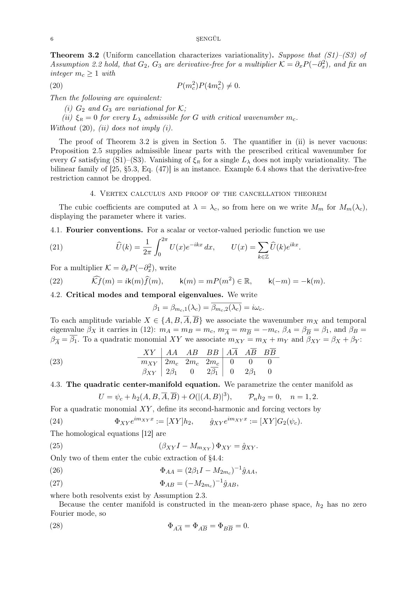
<figcaption class="paper-figure-caption"><b>Fig 5.</b> Low-resolution page preview, page 6</figcaption>
</figure>
</div>

<p><strong>Summary.</strong> This paper analyzes wave selection at an O(2)-equivariant Hopf bifurcation in nonlinear PDEs. By imposing the condition that the nonlinearities are variational (derived from local Hamiltonians), the authors prove that the selection depends solely on one coefficient, $\zeta_R$. This provides a powerful structural constraint linking Hamiltonian symmetries to the stability of emergent wave patterns.</p>
<p><strong>Why it may be interesting.</strong> The rigorous mathematical framework connecting variational principles (Hamiltonian structure) to the selection of stable wave patterns in dissipative, nonlinear PDEs is highly relevant to understanding pattern formation in complex physical systems.</p>
<details>
<summary>Detailed structure</summary>
<p><strong>Main problem.</strong> The paper investigates the selection mechanism between traveling and standing waves that occurs at an O(2)-equivariant Hopf bifurcation in nonlinear partial differential equations (PDEs).</p>
<p><strong>Main result.</strong> It establishes that for variational nonlinearities, the selection is governed by the sign of $\zeta_R$, predicting stable standing waves for $\zeta_R < 0$ and unstable ones for $\zeta_R > 0$.</p>
<p><strong>Method.</strong> The analysis uses center-manifold reduction to derive a normal-form system, followed by detailed calculation of the cubic nonlinear coefficients ($\zeta, \xi$) using techniques involving Poisson operators and Hamiltonian structures.</p>
<p><strong>Model / system.</strong> The study focuses on a class of two-component PDEs on the circle whose nonlinearities are generated by reflection-invariant local Hamiltonians via a common constant-coefficient Poisson operator.</p>
<p><strong>Key observables.</strong> The real parts of the cubic normal-form coefficients, $\zeta_R$ and $\xi_R$, which determine the stability and selection between wave types.</p>
<p><strong>Important parameters / regimes.</strong> The bifurcation parameter $\lambda$, the dissipation rate $\epsilon$, and the resonance conditions (e.g., 2:1 resonance).</p>
<p><strong>Assumptions / limitations.</strong> The nonlinearities are assumed to be variational, meaning they are derived from a local Hamiltonian structure, which imposes strong constraints on the coefficients ($\xi_R=0$).</p>
<p><strong>Paper structure.</strong> The paper proceeds by setting up the problem at the Hopf bifurcation, deriving the reduced normal form via center manifold theory, and then applying the variational constraint to simplify the coefficients and determine the resulting wave selection criteria.</p>
</details>
<details>
<summary>Abstract</summary>
<p>At an $O(2)$-equivariant Hopf bifurcation, the real parts $ζ_R$ and $ξ_R$ of the two cubic normal-form coefficients govern selection between traveling and standing waves. In a fourth-order regularized $p$-system, $ξ_R$ was observed to vanish and the cubic nonlinearity to shift only frequencies. We show that both observations are structural: variational nonlinearities enforce them even when the linear part is dissipative and non-Hamiltonian. We consider a class of two-component PDEs on the circle whose quadratic and cubic nonlinearities are generated by reflection-invariant local Hamiltonians of the fields and finitely many of their spatial derivatives, through a common constant-coefficient Poisson operator. Then $ξ_R=0$ for every admissible linear part, while $ζ_R$ depends only on the quadratic nonlinearity. For variational nonlinearities the direct cubic terms are purely imaginary. The mixed cascade term loses its real part because its second harmonic has zero temporal frequency and the resolvent keeps its parity, while the self-cascade at the doubled critical frequency keeps a real part. When $ζ_R\ne0$, the bifurcating traveling waves are saddles, while the standing waves are supercritical and orbitally asymptotically stable for $ζ_R<0$ and subcritical and unstable for $ζ_R>0$. When the nonlinearities are the Poisson operator applied to polynomials in the fields alone, and its symbol does not vanish at the critical and second-harmonic wavenumbers, cancellation for every admissible linear part conversely characterizes variationality. In a dissipatively regularized Boussinesq family, as dissipation tends to zero, $ζ_R$ vanishes linearly off resonance and diverges inversely at the 2:1 resonance. The Hamiltonian limit of the cubic coefficient is therefore singular.</p>
</details>
<p><sub><a href="#top">↑ back to top</a></sub></p>

<p><a id="paper-2609.24772"></a></p>
<h3 id="broadband-single-particle-absorption-circular-dichroism-reveals-chiroptical-heterogeneity-in-gold-helicoids"><a href="http://arxiv.org/abs/2609.24772v1">Broadband Single-Particle Absorption Circular Dichroism Reveals Chiroptical Heterogeneity in Gold Helicoids</a></h3>
<p><strong>Authors:</strong> Rohit B. Raj, Susanna Bertuletti, Jeong Hyun Han, Sepin Cho, Debapriya Pal, Nick Feldman, Ki Tae Nam, Willem L. Noorduin, A. Femius Koenderink, Erik C. Garnett<br>
<strong>Type:</strong> experiment · <strong>Category:</strong> other · <strong>PDF:</strong> <a href="https://arxiv.org/pdf/2609.24772v1">https://arxiv.org/pdf/2609.24772v1</a><br>
<strong>Analysis basis:</strong> full PDF text, analyzed in chunks
<strong>Topic relevance:</strong> <code>quantum measurements</code> <strong>2/5</strong> · <code>quantum optics experiment</code> <strong>2/5</strong> · <code>interference shaping light</code> <strong>1/5</strong></p>
<div class="figure-strip-hint">↔ Scroll figures horizontally</div>
<div class="paper-figures-scroll">
<figure class="paper-figure-card">
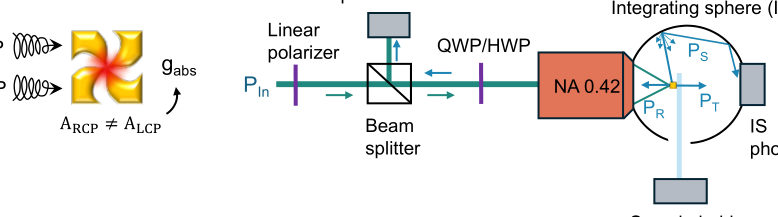
<figcaption class="paper-figure-caption"><b>Fig 1.</b> Figure 1. Broadband single-particle absorption circular dichroism measurement. (a) Schematic of a chiral nanoparticle exhibiting different absorptances under RCP and LCP illumination. (b) Simplified schematic of the wavelength-tunable integrating-sphere microscope. Wavelength-selected incident light of power PIn passes through a linear polarizer and either a QWP or HWP before being focused onto an individual nanoparticle using an NA 0.42 objective. The reflection photodetector records the reflected power, PR, while the integrating sphere collects the transmitted and scattered powers, PT and PS, as a combined signal detected by the IS photodetector. A beam-monitor photodetector used to...</figcaption>
</figure>
<figure class="paper-figure-card">
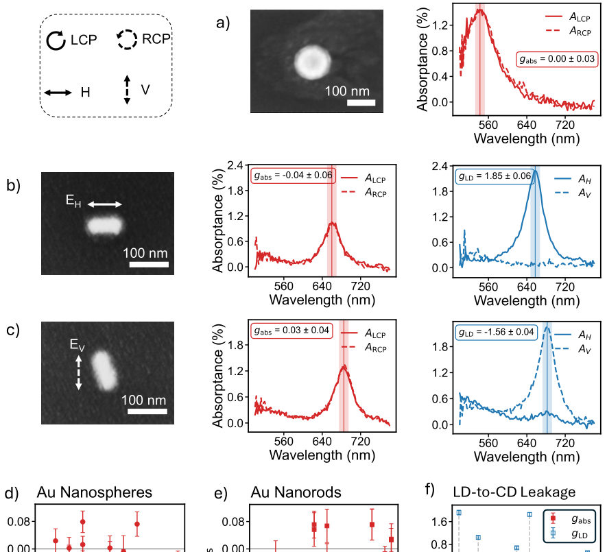
<figcaption class="paper-figure-caption"><b>Fig 2.</b> Figure 2. Validation of absorption CD with achiral Au nanospheres and nanorods. (a) Isotropic 100 nm Au nanosphere control, showing the SEM image and ARCP and ALCP spectra with the corresponding gabs value. Anisotropic Au nanorod controls (40 nm × 80 nm) oriented predominantly along the (b) H and (c) V polarization axes, showing the corresponding SEM images, circular-polarization absorptance spectra and gabs values, and linear-polarization absorptance spectra and gLD values. The EH and EV arrows indicate the incident electric-field directions. Shaded regions in (a)–(c) indicate the 20 nm-wide spectral windows used to determine the reported gabs and gLD values. Population-level gabs as a...</figcaption>
</figure>
<figure class="paper-figure-card">
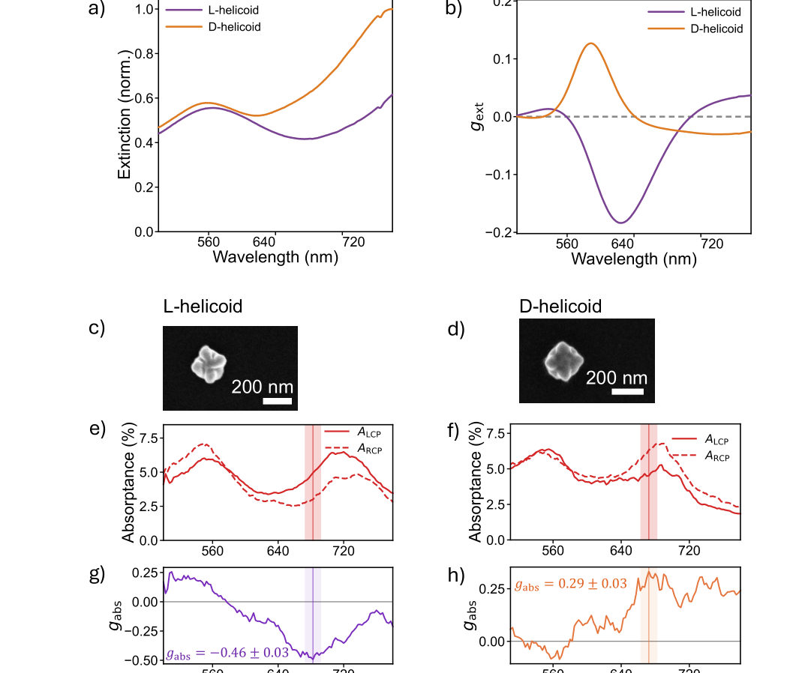
<figcaption class="paper-figure-caption"><b>Fig 3.</b> Figure 3. Ensemble and representative single-particle chiroptical responses of gold helicoids. Ensemble (a) extinction spectra and (b) corresponding extinction dissymmetry</figcaption>
</figure>
<figure class="paper-figure-card">
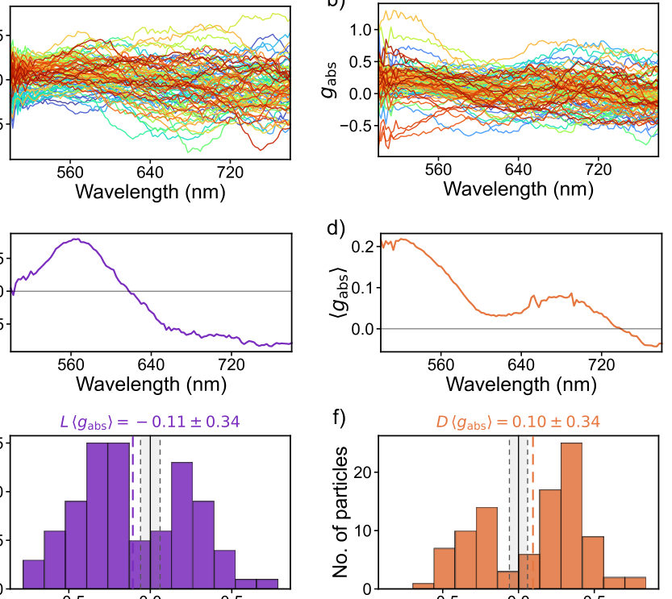
<figcaption class="paper-figure-caption"><b>Fig 4.</b> Figure 4. Population-level heterogeneity in single-particle absorption circular dichroism of gold helicoids. Wavelength-resolved gabs(λ) spectra of all measured (a) L-helicoids (N = 87) and (b) D-helicoids (N = 96), with each trace representing one particle. Corresponding population- averaged gabs(λ) spectra for the (c) L-helicoid and (d) D-helicoid populations. Horizontal gray</figcaption>
</figure>
<figure class="paper-figure-card">
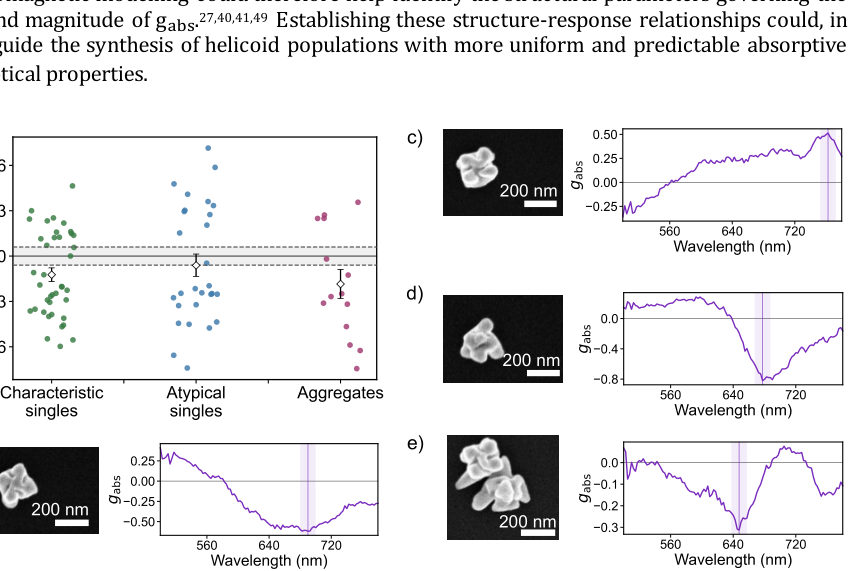
<figcaption class="paper-figure-caption"><b>Fig 5.</b> Figure 5. Relationship between projected morphology and single-particle absorption circular dichroism in L-helicoids. (a) Particle-level gabs values of SEM-correlated L-helicoids classified as Characteristic singles (N = 39), Atypical singles (N = 28), or Aggregates (N = 14). Each point represents one particle; points are horizontally jittered within each morphology category for visibility. The gray region denotes the achiral-control reference range, −0.06 ≤ gabs ≤+0.06, established from pooled nanosphere and nanorod controls. SEM images and corresponding gabs(λ) spectra of representative particles: (b) Characteristic single with the expected negative response, (c) Characteristic single...</figcaption>
</figure>
</div>

<p><strong>Summary.</strong> The researchers developed a novel single-particle microscope to measure absorption circular dichroism (CD) in gold helicoids. They demonstrated that while the overall population average CD is dictated by the chiral synthesis conditions (L vs D), the response of individual particles is highly heterogeneous. This highlights that particle-specific structural details, rather than just bulk morphology, govern the local chiroptical response.</p>
<p><strong>Why it may be interesting.</strong> This work provides a direct, quantitative probe of chiroptical properties at the single-particle level, which is crucial for understanding light-matter interactions in complex nanophotonic systems where ensemble averaging obscures critical physical details.</p>
<details>
<summary>Detailed structure</summary>
<p><strong>Main problem.</strong> The primary goal was to develop and apply a technique to measure single-particle absorption circular dichroism (CD) to understand how individual chiral nanostructures dissipate optical energy, overcoming the limitations of ensemble averaging.</p>
<p><strong>Main result.</strong> The study confirmed that while L- and D-helicoids show statistically distinct mean CD responses, individual particles exhibit pronounced chiroptical heterogeneity, with a significant fraction of particles deviating from the population average regardless of their morphology.</p>
<p><strong>Method.</strong> The authors introduced a wavelength-tunable integrating-sphere microscope to measure the absorptance of individual nanoparticles under right- and left-circularly polarized illumination via direct optical energy balance.</p>
<p><strong>Model / system.</strong> The system involves gold nanostructures, specifically helicoids synthesized using L- and D-glutathione as chiral directors. The measurements are performed on isolated nanoparticles deposited on a substrate.</p>
<p><strong>Key observables.</strong> Absorption dissymmetry factor, gabs($\lambda$); Linear Dichroism (LD) and Circular Dichroism (CD) signals; Population mean gabs values.</p>
<p><strong>Important parameters / regimes.</strong> Wavelength ($\lambda$); Particle morphology (Characteristic singles, Atypical singles, Aggregates); Chiral director (L- vs D-glutathione).</p>
<p><strong>Assumptions / limitations.</strong> The single-particle measurements assume minimal interparticle contributions, and the technique rigorously separates absorption CD from scattering or linear dichroism artifacts.</p>
<p><strong>Figures summary.</strong> Figures illustrate the measurement setup, comparisons between achiral controls (nanospheres/nanorods) and chiral helicoids, and spectral plots showing both ensemble extinction CD and single-particle absorption CD.</p>
<p><strong>Paper structure.</strong> The paper progresses by first establishing the experimental necessity and technical feasibility of single-particle, broadband absorption CD measurement. It validates the technique using achiral controls, then applies it to L- and D-helicoids to show population trends, and finally analyzes the particle-to-particle variability.</p>
</details>
<details>
<summary>Abstract</summary>
<p>Quantitative measurements of absorption circular dichroism (CD) at the single-particle level are essential for understanding how individual chiral nanostructures dissipate optical energy, yet broadband absorptance measurements remain experimentally challenging. Here, we introduce a wavelength-tunable integrating-sphere microscope that determines the absorptance of individual nanoparticles under right- and left-circularly polarized illumination through direct optical energy balance, enabling broadband measurement of the absorption dissymmetry factor, gabs. Measurements of achiral gold nanospheres and strongly anisotropic gold nanorods establish the apparent absorption CD baseline and demonstrate minimal detectable linear-dichroism-to-circular-dichroism (LD-to-CD) leakage under the experimental conditions. Applying this approach to 87 chiral gold helicoids synthesized using L-glutathione (L-helicoids) and 96 synthesized using D-glutathione (D-helicoids) reveals mean particle-level gabs values of opposite sign, with a statistically significant difference between the two populations. Individual particles nevertheless exhibit pronounced heterogeneity in response sign, magnitude, spectral position, and line shape. More than one-third of the particles in each population display opposite-sign absorption CD responses relative to their population-average tendency. Correlative SEM analysis of the L-helicoid population further shows that opposite-sign responses persist among isolated particles exhibiting the characteristic projected helicoid morphology, indicating that aggregation and gross differences in projected morphology are insufficient to explain the observed heterogeneity. These results establish broadband single-particle absorption CD spectroscopy as a direct probe of absorptive chiroptical heterogeneity and reveal particle-specific responses obscured by ensemble averaging.</p>
</details>
<p><sub><a href="#top">↑ back to top</a></sub></p>

<p><a id="paper-2609.23618"></a></p>
<h3 id="interplay-of-spin-orbit-coupling-and-magnetic-chirality-multidirectional-spin-polarization-in-a-helical-antiferromagnet"><a href="http://arxiv.org/abs/2609.23618v1">Interplay of spin-orbit coupling and magnetic chirality: Multidirectional spin polarization in a helical antiferromagnet</a></h3>
<p><strong>Authors:</strong> Kallol Mondal, Sudin Ganguly, Santanu K. Maiti<br>
<strong>Type:</strong> theory · <strong>Category:</strong> other · <strong>PDF:</strong> <a href="https://arxiv.org/pdf/2609.23618v1">https://arxiv.org/pdf/2609.23618v1</a><br>
<strong>Analysis basis:</strong> full PDF text, analyzed in chunks
<strong>Topic relevance:</strong> <code>Keldysh / 2PI / non-Gaussian methods</code> <strong>2/5</strong> · <code>methods for driven-dissipative</code> <strong>2/5</strong></p>
<div class="figure-strip-hint">↔ Scroll figures horizontally</div>
<div class="paper-figures-scroll">
<figure class="paper-figure-card">
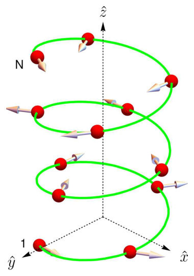
<figcaption class="paper-figure-caption"><b>Fig 1.</b> FIG. 1. (Color online). Schematic representation of the non- collinear antiferromagnetic helix. Successive magnetic mo- ments (shown with the 3D arrows associated with red balls) are progressively rotated with respect to one another, giving rise to a chiral magnetic texture with vanishing net magneti- zation. In the transport setup, the source and drain leads are attached to the end sites, denoted with 1 and N, respectively. The leads are omitted from the figure for clarity.</figcaption>
</figure>
<figure class="paper-figure-card">
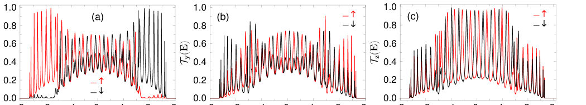
<figcaption class="paper-figure-caption"><b>Fig 2.</b> FIG. 2. (Color online). Energy dependence of the spin-resolved transmission probabilities T ↑(↓) α (α = x, y, z) for the short-range hopping (SRH) helix with N = 20, tso = 0.25, and h = 0.5. Panels (a), (b), and (c) correspond to the x, y, and z-directions, respectively. In each panel, the red (black) curves represent the spin-up (spin-down) transmission probabilities.</figcaption>
</figure>
<figure class="paper-figure-card">
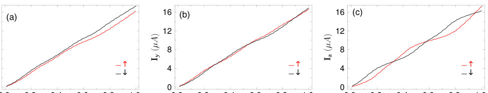
<figcaption class="paper-figure-caption"><b>Fig 3.</b> FIG. 3. (Color online). Spin-resolved current components I↑(↓) α (α = x, y, z) as a function of the applied bias voltage for the SRH configuration, shown in panels (a), (b), and (c), respectively. The red and black curves correspond to the up- and down-spin currents. All data are computed for a fixed Fermi energy EF = 0.5 eV. The system parameters are the same as Fig. 2.</figcaption>
</figure>
<figure class="paper-figure-card">
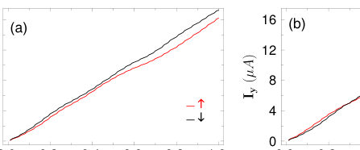
<figcaption class="paper-figure-caption"><b>Fig 4.</b> Figure 3 depicts the bias dependence of the spin- resolved currents along the three directions for the SRH helix, where panels (a), (b), and (c) correspond to the x-, y-, and z-axes, respectively. The calculations utilize the same parameter set specified in Fig. 2 at a fixed Fermi en- ergy EF = 0.5 eV. Across all three directions, a distinct separation between the spin-up and spin-down currents is observed over a wide bias range. This different originates directly from the spin-channel asymmetry in the trans- mission spectra presented in Fig. 2. These unequal con- tributions signify the generation of a net spin-polarized current along all three spatial axes, confirming that the interplay...</figcaption>
</figure>
<figure class="paper-figure-card">
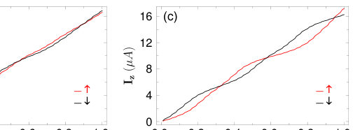
<figcaption class="paper-figure-caption"><b>Fig 5.</b> Figure 4 illustrates the bias dependence of the spin po- larization coefficients along the three directions for the SRH helix, calculated using the same parameters as in Fig. 2. Several prominent features emerge from this anal- ysis. First, a finite spin polarization is observed along all three spatial directions, confirming that the coexis- tence of a non-collinear magnetic texture and spin-orbit coupling generates a truly multidirectional spin polariza- tion. This behavior aligns well with the spin-resolved transmission spectra and current-voltage characteristics discussed earlier. Second, the magnitude of the polar- ization depends strongly on the chosen spin quantiza- tion axis. Among the...</figcaption>
</figure>
</div>

<p><strong>Summary.</strong> This theoretical study models spin transport through a non-collinear helical antiferromagnet incorporating spin-orbit coupling. Using the Landauer-Büttiker formalism, the authors demonstrate that the helical structure generates unique, multidirectional spin polarization components. The results highlight that structural chirality and long-range hopping are key parameters for achieving highly tunable spin-filtering effects.</p>
<p><strong>Why it may be interesting.</strong> This work is highly relevant to open quantum systems and spintronics, as it models spin transport in geometrically constrained magnetic materials, providing theoretical predictions for novel spin-filtering effects beyond simple collinear systems.</p>
<details>
<summary>Detailed structure</summary>
<p><strong>Main problem.</strong> The study investigates spin-dependent transport in a non-collinear helical antiferromagnet subjected to spin-orbit coupling (SOC). The goal is to understand how this interplay generates spin polarization.</p>
<p><strong>Main result.</strong> The system exhibits robust, multidirectional spin polarization ($\hat{x}, \hat{y}, \hat{z}$), which is significantly enhanced by long-range hopping and arises from the symmetry breaking inherent in the non-collinear magnetic texture.</p>
<p><strong>Method.</strong> The analysis employs the Landauer-Büttiker formalism combined with the Green's function approach to calculate spin-resolved transmission probabilities and currents.</p>
<p><strong>Model / system.</strong> The model is a tight-binding description of a single-stranded non-collinear antiferromagnetic helix coupled to semi-infinite 1D leads. The Hamiltonian incorporates spin-dependent scattering, electron hopping, and SOC.</p>
<p><strong>Key observables.</strong> Spin polarization components ($P_x, P_y, P_z$), spin-polarized electrical currents, and spin-dependent transmission probabilities ($T_{\sigma\sigma'}$).</p>
<p><strong>Important parameters / regimes.</strong> Helical parameters like radius ($R$), stacking distance ($\Delta z$), and twisting angle ($\Delta\phi$); SOC strength ($t_{so}$); Fermi energy ($E_F$); and temperature ($T$).</p>
<p><strong>Assumptions / limitations.</strong> The analysis is performed in the coherent transport regime, without invoking dephasing mechanisms, and often assumes a uniform magnitude for the spin-dependent scattering field.</p>
<p><strong>Figures summary.</strong> Figures illustrate the dependence of spin polarization on SOC strength vs. Fermi energy (Fig. 9), the bias voltage dependence for various twisting angles (Fig. 10), and the temperature dependence up to 500 K (Fig. 11).</p>
<p><strong>Paper structure.</strong> The paper systematically analyzes the transport properties by first establishing the model Hamiltonian and then applying the Landauer-Büttiker formalism. It progresses by demonstrating the emergence of multidirectional polarization, showing its tunability via structural chirality ($\Delta\phi$), and finally confirming its robustness across varying external parameters like SOC strength and temperature.</p>
</details>
<details>
<summary>Abstract</summary>
<p>We investigate spin-dependent transport in a non-collinear helical antiferromagnet in the presence of spin-orbit coupling within a tight-binding framework. Using the Landauer-Büttiker formalism, we analyze the generation of spin polarization arising from the combined effects of the helical magnetic texture and spin-orbit interaction. We find that finite spin polarization can be generated simultaneously along the $\hat{x}$, $\hat{y}$, and $\hat{z}$-directions, in contrast to the predominantly single-axis spin polarization commonly observed in conventional spin-filtering systems. The multidirectional spin polarization originates from the symmetry breaking introduced by the non-collinear magnetic order. We further show that the spin polarization is modified significantly in the presence of spin-orbit coupling and it has strong dependence on the parameters associated with the helical system. In particular, long-range hopping significantly enhances the spin-filtering effect, leading to large spin polarization components along all three spatial directions.</p>
</details>
<p><sub><a href="#top">↑ back to top</a></sub></p>

<p><a id="paper-2609.23129"></a></p>
<h3 id="magnetic-quadrupole-lens-and-current-induced-quadrupolar-dynamics-of-antiskyrmion"><a href="http://arxiv.org/abs/2609.23129v1">Magnetic Quadrupole Lens and Current-Induced Quadrupolar Dynamics of Antiskyrmion</a></h3>
<p><strong>Authors:</strong> Linfeng Du, Yang Liu, Peng Yan, Ying Su<br>
<strong>Type:</strong> theory · <strong>Category:</strong> other · <strong>PDF:</strong> <a href="https://arxiv.org/pdf/2609.23129v1">https://arxiv.org/pdf/2609.23129v1</a><br>
<strong>Analysis basis:</strong> full PDF text, analyzed in chunks
<strong>Topic relevance:</strong> <code>Keldysh / 2PI / non-Gaussian methods</code> <strong>2/5</strong> · <code>methods for driven-dissipative</code> <strong>2/5</strong></p>
<div class="figure-strip-hint">↔ Scroll figures horizontally</div>
<div class="paper-figures-scroll">
<figure class="paper-figure-card">
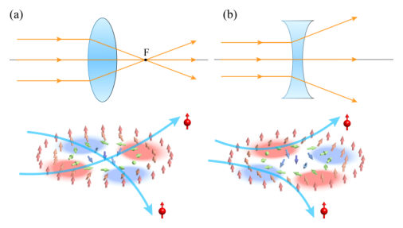
<figcaption class="paper-figure-caption"><b>Fig 1.</b> FIG. 1. Analogy between optical lenses (upper panels) and anti- skyrmion magnetic quadrupole lenses (lower panels). Focusing op- tical and magnetic quadrupole lenses are shown in (a), while their defocusing counterparts are shown in (b). The emergent magnetic quadrupole field of the antiskyrmion is represented by the alternat- ing blue and red shading regions. The incident electrons are focused at the antiskyrmion core, which serves as the focal point of the mag- netic quadrupole lens in (a).</figcaption>
</figure>
<figure class="paper-figure-card">
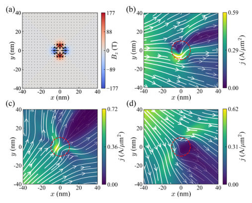
<figcaption class="paper-figure-caption"><b>Fig 2.</b> FIG. 2. (a) Emergent magnetic field of an antiskyrmion at finite RSOC. (b)-(d) Spatial distributions of electron currents injected at θin = 0◦, 45◦, and −45◦, respectively. The white streamlines indi- cate the local electron current direction. The red dashed circles in (b)-(d) indicate the position of the antiskyrmion shown in (a). For θin = ±45◦, the electron current is focused and defocused at the an- tiskyrmion core, as shown in (c) and (d), respectively.</figcaption>
</figure>
<figure class="paper-figure-card">
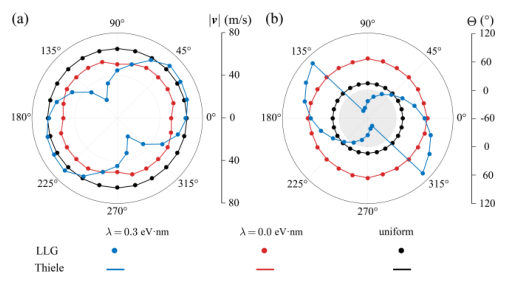
<figcaption class="paper-figure-caption"><b>Fig 3.</b> FIG. 3. (a) and (b) Polar plots of the antiskyrmion speed |v| and Hall angle Θ as functions of the electron current incident angle θin. The self-consistent results for finite RSOC (red dots) and zero RSOC (blue dots) are obtained by solving the LLG Eq. (6) with the current j(r) updated from the quantum transport calculations. The approx- imated results with uniform current (black dots) are obtained by di- rectly solving the LLG equation with j(r) = jin. The corresponding results from the generalized Thiele Eq. (7) are represented by lines of the same color as the dot symbols.</figcaption>
</figure>
<figure class="paper-figure-card">
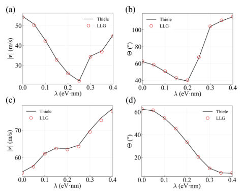
<figcaption class="paper-figure-caption"><b>Fig 4.</b> FIG. 4. (a) and (b) Antiskyrmion speed |v| and Hall angle Θ as functions of the RSOC strength λ for an electron current injected at θin = −45◦. (c) and (d) |v| and Θ as functions of λ for θin = 45◦. The red circles and black lines represent numerical results obtained by solving the LLG Eq. (6) and Thiele Eq. (7), respectively. In both equations, the current density j(r) is obtained from the quan- tum transport calculations.</figcaption>
</figure>
</div>

<p><strong>Summary.</strong> This work demonstrates that antiskyrmions function as magnetic quadrupole lenses, which self-consistently modify the flow of conduction electrons passing through them. This lensing effect leads to a tunable quadrupolar antiskyrmion Hall effect, offering a powerful mechanism to control antiskyrmion motion for advanced spintronic memory applications.</p>
<p><strong>Why it may be interesting.</strong> The self-consistent coupling between quantum electron transport (lensing) and classical magnetic dynamics (LLG) provides a rich, non-equilibrium many-body problem relevant to spintronics and topological matter.</p>
<details>
<summary>Detailed structure</summary>
<p><strong>Main problem.</strong> The study investigates the coupled dynamics between conduction electrons and antiskyrmions, specifically analyzing how the antiskyrmion acts as a magnetic quadrupole lens to modify current-induced dynamics.</p>
<p><strong>Main result.</strong> The research reveals a quadrupolar antiskyrmion Hall effect (QASkHE) and demonstrates that current focusing/defocusing can suppress the Hall angle, which is crucial for developing racetrack memory devices.</p>
<p><strong>Method.</strong> The authors employed an iterative approach combining quantum transport calculations (for electron current distribution) with micromagnetic simulations (governed by the LLG equation) to self-consistently model the coupled system.</p>
<p><strong>Model / system.</strong> The system involves antiskyrmions stabilized by Dzyaloshinskii–Moriya interaction (DMI) on a lattice, coupled to conduction electrons subjected to Rashba Spin-Orbit Coupling (RSOC) and exchange coupling.</p>
<p><strong>Key observables.</strong> Antiskyrmion speed, Hall angle, local current distribution, and the emergent magnetic fields ($\mathbf{B}_T$ and $\mathbf{B}_M$).</p>
<p><strong>Important parameters / regimes.</strong> RSOC strength ($\lambda$), DMI strength ($D$), and lattice parameters ($A, K$).</p>
<p><strong>Assumptions / limitations.</strong> The dynamics are modeled by coupling quantum transport results into the classical LLG equation, and the analysis relies on the concept of magnetic quadrupole lensing.</p>
<p><strong>Figures summary.</strong> Figures illustrate the analogy between optical and magnetic quadrupole lenses, showing how current injection angle dictates electron beam focusing/defocusing, and visualizing the resulting speed and Hall angle dependence on injection angle.</p>
<p><strong>Paper structure.</strong> The paper establishes the theoretical framework by defining the Hamiltonians, then uses iterative simulations to calculate the self-consistent current distribution and the resulting antiskyrmion dynamics, culminating in the identification of the QASkHE.</p>
</details>
<details>
<summary>Abstract</summary>
<p>We demonstrate that antiskyrmions can serve as magnetic quadrupole lenses that focus or defocus electric currents traversing them. We showcase the antiskyrmion core as a focal point where electron beams converge for specific injection directions, leading to anisotropic and nonuniform current distributions. Thus the current-induced antiskyrmion dynamics is profoundly modified by the magnetic quadrupole lensing via the spin-transfer torque. By incorporating quantum transport and micromagnetic simulations iteratively, we self-consistently capture the coupled dynamics of conduction electrons and antiskyrmions. Our results unveil a quadrupolar antiskyrmion Hall effect that is highly anisotropic with respect to the current direction and can be effectively tuned by the spin-orbit coupling. In particular, the current focusing (defocusing) dramatically enhances (suppresses) the antiskyrmion speed while simultaneously reducing its Hall angle, thereby overcoming a key challenge for antiskyrmion racetrack memories. Our work establishes the intrinsic current lensing as a powerful mechanism for manipulating topological magnetic textures and opens new avenues for antiskyrmion-based spintronic devices.</p>
</details>
<p><sub><a href="#top">↑ back to top</a></sub></p>

<p><a id="paper-2609.22580"></a></p>
<h3 id="vanadium-doping-induced-valley-asymmetries-in-wsmath1851math-monolayers"><a href="http://arxiv.org/abs/2609.22580v1">Vanadium doping induced valley asymmetries in WS$_2$ monolayers</a></h3>
<p><strong>Authors:</strong> Frederico B. Sousa, Boyang Zheng, Elizabeth Grace Houser, Paulo E. Faria Junior, Zhuohang Yu, Alessandra Ames, Gabriel A. D. Souza, Mingzu Liu, Gilmar Eugenio Marques, Leandro M. Malard, Mauricio Terrones, Vincent H. Crespi, Marcio D. Teodoro<br>
<strong>Type:</strong> both · <strong>Category:</strong> other · <strong>PDF:</strong> <a href="https://arxiv.org/pdf/2609.22580v1">https://arxiv.org/pdf/2609.22580v1</a><br>
<strong>Analysis basis:</strong> full PDF text, analyzed in chunks
<strong>Topic relevance:</strong> <code>analog quantum simulation</code> <strong>2/5</strong> · <code>driven-dissipative phase transition</code> <strong>1/5</strong> · <code>quantum measurements</code> <strong>1/5</strong></p>
<div class="figure-strip-hint">↔ Scroll figures horizontally</div>
<div class="paper-figures-scroll">
<figure class="paper-figure-card">
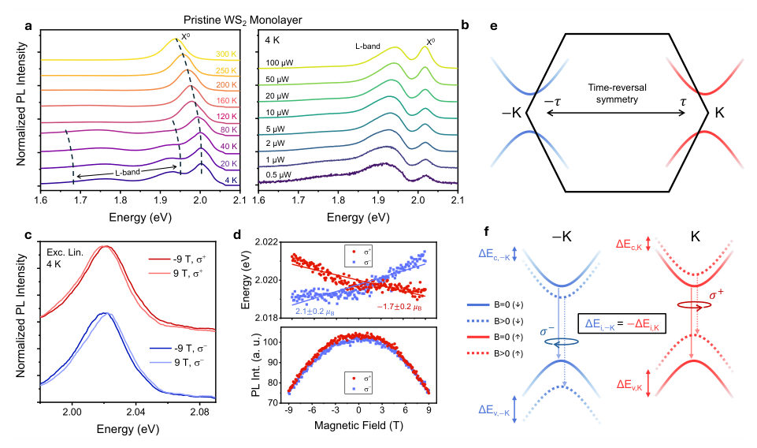
<figcaption class="paper-figure-caption"><b>Fig 1.</b> Figure 1: a Temperature- and b power-dependent normalized PL spectra for a pristine WS2 monolayer displaying X0 and L-band emissions. c Normalized PL spectra acquired at 9 T and −9 T, 4 K, linearly polarized excitation, and circular polarization detection for the X0 emission in the pristine WS2 monolayer. Red (blue) line spectra denote σ+ (σ−) detection. d Magnetic-field- dependent X0 energy (top panel) and intensity (bottom panel) graphs for both σ+ and σ−signals. Similar Zeeman slopes of αK = −1.7 ± 0.2 µB and α−K = 2.1 ± 0.2 µB are obtained for K and −K valleys, respectively. e Representation of the first Brillouin zone of a pristine WS2 monolayer with K and −K valleys connected through...</figcaption>
</figure>
<figure class="paper-figure-card">

<figcaption class="paper-figure-caption"><b>Fig 2.</b> Figure 1c shows PL spectra (normalized by the maximum intensity) obtained at 9 T and −9 T</figcaption>
</figure>
<figure class="paper-figure-card">
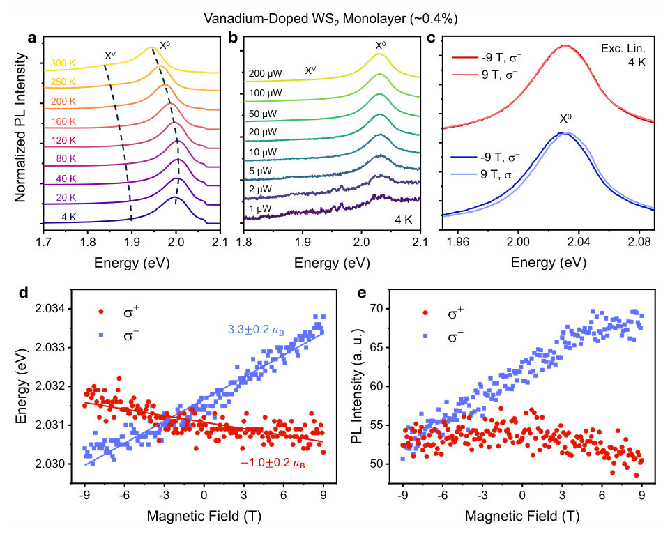
<figcaption class="paper-figure-caption"><b>Fig 3.</b> Figure 2: a Temperature- and b power-dependent normalized PL spectra for a ∼0.4 % V-doped WS2 monolayer displaying X0 and XV emissions. c Normalized PL spectra acquired at 9 T and −9 T, 4 K, with linearly polarized excitation, and circular polarization detection for the X0 emission. Red (blue) line spectra denote σ+ (σ−) detection. d Magnetic-field-dependent X0 energy graph for both σ+ and σ−signals. Valley-dependent Zeeman slopes of αK = −1.0 ± 0.2 µB and α−K = 3.3 ± 0.2 µB are obtained for K and −K valleys, respectively. e Magnetic-field-dependent X0 integrated intensity graph for both σ+ and σ−signals corroborating the valley asymmetric response.</figcaption>
</figure>
<figure class="paper-figure-card">

<figcaption class="paper-figure-caption"><b>Fig 4.</b> Figure 3: a-c PL spectra acquired at 4 K, with magnetic field at 9 T, 0 T, and −9 T for the pristine (a), ∼0.4 % (b), and ∼2.0 % (c) V-doped WS2 monolayers. The spectra were obtained with σ−</figcaption>
</figure>
<figure class="paper-figure-card">

<figcaption class="paper-figure-caption"><b>Fig 5.</b> Figure 4: a Schematics of a vanadium-doped WS2 monolayer and the consequent time-reversal symmetry breaking between K and −K valleys. b The band structure of a ∼4 % V-doped WS2 monolayer. The areal size of the circles is proportional to the projection to the V dz2 orbital, with the red (blue) color denoting spin-up (-down) states. c Circularly polarized optical transitions calculated for the V-doped WS2 monolayer. The areal size for pairs of circles (one in the conduction band, and one in the valence band for the same k) is proportional to the magnitude of the transition dipole moment, with the color denoting the energy of the transition.</figcaption>
</figure>
</div>

<p><strong>Summary.</strong> This paper reports on the induction of significant valley asymmetries in $ ext{WS}_2$ monolayers through Vanadium doping. Using magneto-PL spectroscopy and DFT, the authors show that V-doping breaks time-reversal symmetry, leading to unequal Zeeman shifts between the $  ext{K}$ and $-	ext{K}$ valleys. This work paves the way for developing defect-engineered valleytronic devices.</p>
<p><strong>Why it may be interesting.</strong> This work is highly relevant to open quantum systems and quantum optics because it demonstrates a robust, defect-engineered method to break symmetries and control valley polarization in 2D materials, which is a key platform for valleytronic quantum information processing.</p>
<details>
<summary>Detailed structure</summary>
<p><strong>Main problem.</strong> The study investigates how introducing Vanadium (V) dopants into $    ext{WS}_2$ monolayers induces and enhances valley asymmetries and modifies the valley Zeeman effect.</p>
<p><strong>Main result.</strong> V-doping leads to pronounced and measurable valley asymmetries in the Zeeman splitting, with the $-	ext{K}$ valley exhibiting a significantly larger Zeeman slope compared to the $  ext{K}$ valley. Furthermore, the doping enhances the overall degree of circular polarization.</p>
<p><strong>Method.</strong> The research combines experimental magneto-photoluminescence (PL) spectroscopy with theoretical Density Functional Theory (DFT) calculations to analyze the electronic structure changes.</p>
<p><strong>Model / system.</strong> The physical system is $    ext{WS}_2$ monolayers, which are engineered by substituting Sulfur atoms with Vanadium atoms. The analysis focuses on the valley degree of freedom, which is manipulated by the magnetic polarization induced by the V dopants.</p>
<p><strong>Key observables.</strong> Zeeman slopes ($\alpha_{	ext{K}}$ and $\alpha_{-	ext{K}}$), degree of circular polarization ($  ext{DCP}$), and exciton energy shifts ($    ext{X}_0$ energy) as a function of magnetic field.</p>
<p><strong>Important parameters / regimes.</strong> Doping concentrations ($\sim 0.4\%$ and $\sim 2.0\%$ V), low temperature ($4 	ext{ K}$), and applied magnetic fields ($\pm 9 	ext{ T}$).</p>
<p><strong>Assumptions / limitations.</strong> The analysis assumes that the observed asymmetries are due to the time-reversal symmetry breaking caused by the magnetic moment of the incorporated vanadium atoms.</p>
<p><strong>Figures summary.</strong> Figures show PL spectra and magneto-PL measurements for pristine and V-doped $ ext{WS}_2$, illustrating the magnetic field dependence of the $ ext{X}_0$ energy and the resulting valley asymmetry in the Zeeman splitting.</p>
<p><strong>Paper structure.</strong> The paper progresses by first establishing the baseline behavior of pristine $ ext{WS}_2$, then presenting experimental evidence of enhanced and asymmetric valley responses upon V-doping, and finally supporting these findings with DFT calculations detailing the spin-dependent hybridization.</p>
</details>
<details>
<summary>Abstract</summary>
<p>Transition metal dichalcogenide (TMD) monolayers offer an innovative platform for encoding and manipulating information through the valley degree of freedom. While unique valley-related physical phenomena have been reported so far, practical applications still require advanced control over the valley polarization efficiency and the valley Zeeman effect. Recently, the introduction of spin-polarized metal atoms as substitutional defects was reported to break the time-reversal symmetry in TMD monolayers, consequently inducing a room-temperature ferromagnetic ordering and enhancing the valley-dependent optical responses. Here, we report valley asymmetries for vanadium-doped WS$_2$ monolayers. With a given magnetic polarization, one valley exhibits larger Zeeman slope and degree of circular polarization than the other valley. Additionally, the overall degree of circular polarization in the doped samples is approximately twice that of the pristine WS$_2$ monolayer. Density functional theory calculations in the doped structure show that different energy shifts in conduction band edges due to spin-dependent hybridization lead to different exciton energies between valleys, which is consistent with the experimental observations. Our results pave the way for valleytronic technologies based on defect-engineered two-dimensional materials.</p>
</details>
<p><sub><a href="#top">↑ back to top</a></sub></p>

<p><a id="paper-2609.22776"></a></p>
<h3 id="comment-on-topography-of-fermi-arcs-in-t-ptbimath1863math-using-high-resolution-angle-resolved-photoemission-spectroscopy-arxiv250308841-cond-mat"><a href="http://arxiv.org/abs/2609.22776v1">Comment on "Topography of Fermi arcs in t-PtBi$_2$ using high-resolution angle-resolved photoemission spectroscopy" arXiv:2503.08841 (cond-mat)</a></h3>
<p><strong>Authors:</strong> Sergey Borisenko<br>
<strong>Type:</strong> experiment · <strong>Category:</strong> strongly correlated electrons · <strong>PDF:</strong> <a href="https://arxiv.org/pdf/2609.22776v1">https://arxiv.org/pdf/2609.22776v1</a><br>
<strong>Analysis basis:</strong> full PDF text, analyzed in chunks
<strong>Topic relevance:</strong> <code>quantum measurements</code> <strong>2/5</strong> · <code>Keldysh / 2PI / non-Gaussian methods</code> <strong>1/5</strong></p>
<div class="figure-strip-hint">↔ Scroll figures horizontally</div>
<div class="paper-figures-scroll">
<figure class="paper-figure-card">

<figcaption class="paper-figure-caption"><b>Fig 1.</b> FIG. 1. Anisotropic gap in the data of O’Leary et al. (a) Portion of the Fermi-surface map of termination A from Ref. [3]. Black lines indicate the momentum cuts shown in Figs. 4(c)–4(j) of Ref. [3]; the additional cut through N and B is taken from their Fig. 3(b). The intersections with the Fermi arc are numbered 1–16. N denotes the crossing closest to the nodal direction in the notation of Ref. [2], and B the second crossing of the same cut. The angle θ parameterizes position along the arc, with θ = 0 at N. (b) Angular dependence of the low-energy scale extracted from the deposited data using three procedures: leading-edge (LE) position of EDCs selected at locally fitted EF -MDC maxima...</figcaption>
</figure>
<figure class="paper-figure-card">

<figcaption class="paper-figure-caption"><b>Fig 2.</b> Fig. 4c Fig. 4e Fig. 4f Im_ek3008 Im_ek3012</figcaption>
</figure>
<figure class="paper-figure-card">

<figcaption class="paper-figure-caption"><b>Fig 3.</b> FIG. 2. Back-bending of the dispersion in the deposited data of O’Leary et al. (a) Five representative momentum cuts from the deposited dataset. The first three correspond to Figs. 4(c), 4(e), and 4(f) of Ref. [3]; Im ek3008 and Im ek3012 are additional deposited cuts. Green and blue curves show, respectively, the leading-edge and EDC peak positions obtained from local fits to each EDC across the cuts. Both quantities reverse their dispersion near the Fermi crossings, revealing back- bending on both sides of the band. The red symbols at the top indicate the approximate momentum intervals over which the back-bending occurs. (b) Corresponding sequences of raw EDCs around one representative...</figcaption>
</figure>
<figure class="paper-figure-card">

<figcaption class="paper-figure-caption"><b>Fig 4.</b> Fig. 5a Im_nr4004</figcaption>
</figure>
<figure class="paper-figure-card">

<figcaption class="paper-figure-caption"><b>Fig 5.</b> Fig. 5b Im_nr4008</figcaption>
</figure>
</div>

<p><strong>Summary.</strong> This work re-examines ARPES data on the Weyl semimetal t-PtBi2 to resolve conflicting reports on its superconducting state. By reanalyzing raw data using robust spectral features, the authors confirm the existence of a persistent, anisotropic superconducting gap up to 19 K. The study emphasizes the critical importance of consistent data registration when comparing temperature-dependent measurements in condensed matter spectroscopy.</p>
<p><strong>Why it may be interesting.</strong> While focused on superconductivity, the rigorous analysis of spectral features and the need for careful data registration in ARPES are crucial techniques applicable to any strongly correlated system where subtle energy scales are measured.</p>
<details>
<summary>Detailed structure</summary>
<p><strong>Main problem.</strong> The paper re-evaluates conflicting experimental claims regarding the presence and nature of superconductivity in the Weyl semimetal t-PtBi2, specifically challenging the assertion that superconducting signatures vanish above 3 K.</p>
<p><strong>Main result.</strong> The reanalysis of independent ARPES data confirms a strongly anisotropic low-energy superconducting gap and persistent low-energy suppression up to 19 K, contradicting previous interpretations that suggested the gap disappears at low temperatures.</p>
<p><strong>Method.</strong> The authors reanalyzed deposited ARPES data using only robust spectral features (MDC maxima, EDC peak positions, leading edges) rather than relying on full spectral modeling or potentially flawed temperature-dependent data processing.</p>
<p><strong>Model / system.</strong> The study focuses on the Weyl semimetal material t-PtBi2, a system known for its topological electronic properties and exhibiting surface superconductivity.</p>
<p><strong>Key observables.</strong> Anisotropic low-energy superconducting gap magnitude ($\Delta$), dispersion back-bending, and the persistence of low-energy suppression across different temperatures (3 K to 19 K).</p>
<p><strong>Important parameters / regimes.</strong> Gap values of approximately 2, 2, 1, and 0.8 meV at four Fermi crossings; temperatures up to 19 K.</p>
<p><strong>Assumptions / limitations.</strong> The analysis assumes that spectral features like leading edges and peak positions are reliable indicators of the superconducting gap, and that the bulk Fermi cutoff provides a consistent energy reference for relative measurements.</p>
<p><strong>Figures summary.</strong> Figures show Fermi-surface maps illustrating gap anisotropy, raw EDC sequences demonstrating dispersion back-bending, and plots detailing the temperature evolution of the gap derived from reanalyzed datasets.</p>
<p><strong>Paper structure.</strong> The paper first establishes the conflict regarding superconductivity in t-PtBi2. It then details the rigorous reanalysis of O'Leary et al.'s data, confirming the anisotropic gap. Finally, it addresses the temperature dependence by showing that previous interpretations relied on flawed data registration techniques, concluding that the gap persists to higher temperatures.</p>
</details>
<details>
<summary>Abstract</summary>
<p>Angle-resolved photoemission spectroscopy (ARPES) and scanning tunneling spectroscopy have established surface superconductivity in the Weyl semimetal t-PtBi$_2$, whereas O'Leary et al. concluded from an independent ARPES experiment that superconducting signatures are absent above 3 K. Here we reanalyze the complete deposited data of O'Leary et al. Using only experimentally determined momentum-distribution-curve (MDC) maxima, energy-distribution-curve (EDC) peak positions, and leading edges, we find a strongly anisotropic low-energy gap and dispersion back-bending that closely reproduce the magnitude and angular dependence reported independently by Changdar et al. We further show that the temperature-dependent data of Ref.~\cite{Oleary} originate from the other surface termination and were presented using temperature-dependent energy translations, momentum translations, and momentum rescalings. Registering the original temperature-dependent datasets using the metallic bulk Fermi cutoff reveals finite gaps of approximately 2, 2, 1, and 0.8 meV at the four Fermi crossings. Thus the independently acquired data of O'Leary et al., obtained on different samples and with a different photon energy, confirm rather than contradict the previously reported anisotropic superconducting gap and additionally show that an anisotropic low-energy suppression persists to 19 K.</p>
</details>
<p><sub><a href="#top">↑ back to top</a></sub></p>

<p><a id="paper-2609.23783"></a></p>
<h3 id="matching-rules-for-a-three-dimensional-strongly-aperiodic-monotile"><a href="http://arxiv.org/abs/2609.23783v1">Matching Rules for a Three-Dimensional Strongly Aperiodic Monotile</a></h3>
<p><strong>Authors:</strong> Felix Flicker<br>
<strong>Type:</strong> theory · <strong>Category:</strong> other · <strong>PDF:</strong> <a href="https://arxiv.org/pdf/2609.23783v1">https://arxiv.org/pdf/2609.23783v1</a><br>
<strong>Analysis basis:</strong> full PDF text, analyzed in chunks
<strong>Topic relevance:</strong> <code>analog quantum simulation</code> <strong>2/5</strong></p>
<div class="figure-strip-hint">↔ Scroll figures horizontally</div>
<div class="paper-figures-scroll">
<figure class="paper-figure-card">

<figcaption class="paper-figure-caption"><b>Fig 1.</b> FIG. 2. (a) The Chair decorated with arrows. (b) A net of (a), in order to show the full decoration. Indented faces in (a) are dark faces in the net, and are reached across the edges marked with double black lines (stitches). Dashed lines are not edges on The Chair. (c) The decorations of The Superchair are obtained from those of The Chair by these composition rules. (d) The net of the Decorated Superchair.</figcaption>
</figure>
<figure class="paper-figure-card">

<figcaption class="paper-figure-caption"><b>Fig 2.</b> FIG. 1. (a) The 3D strongly aperiodic monotile identified in Ref. 1, which we refer to as the Decorated Chair. The inset shows the highlighted face, along with the heights or depths of the corresponding pyramid decorations that force aperiodicity in units of 1/10, 000 the cube length. Figure reproduced from Ref. 1, whose Fig.3 shows the patterns for all faces. (b) 8 Chairs combined into a Superchair. (c) The Superchair separated for clarity.</figcaption>
</figure>
<figure class="paper-figure-card">

<figcaption class="paper-figure-caption"><b>Fig 3.</b> FIG. 3. Example outputs of our exact enumeration code. The top row shows arrow decorations, the bottom row face-colour decorations. Red lines: original Chair; blue lines: members of red’s Superchair; magenta lines: mirror image; green lines: forced second layer. (a) One of the 44 ways for two Decorated Chairs to meet. (b) One of the ways to enclose a Decorated Chair in a single shell (expanded for clarity). This example is a Decorated Superchair plus one Decorated Chair to complete it. (c) A 2-layer-deep shell. (d) One of the 611 ways for face-colour-decorated Chairs to meet; this example contains a mirrored Decorated Chair. (e) An example of a 1-layer-deep shell, expanded; this one is...</figcaption>
</figure>
<figure class="paper-figure-card">

<figcaption class="paper-figure-caption"><b>Fig 4.</b> FIG. 4. Simple examples of geometrical matching rules that force aperiodicity. (a) An equivalent to the arrow rule of Fig.2a. (b) An inequivalent rule captured by the face colour- ing decoration.</figcaption>
</figure>
</div>

<p><strong>Summary.</strong> This paper develops and simplifies the matching rules required to force a strongly aperiodic tiling using a 3D monotile called the Decorated Chair. By moving from complex geometric rules to simple face-coloring constraints, the authors prove that the tiling's aperiodicity is robustly encoded in these minimal local rules. This work provides a theoretical framework for designing physical systems that exhibit complex, non-repeating order.</p>
<p><strong>Why it may be interesting.</strong> While focused on crystallography/tiling theory, the concept of forcing complex, non-periodic order using local rules is analogous to designing quantum error-correcting codes or engineering complex quantum states in optical lattices.</p>
<details>
<summary>Detailed structure</summary>
<p><strong>Main problem.</strong> The paper aims to establish general, minimal requirements for face decorations (matching rules) on a 3D monotile to force strong aperiodicity, building upon previous work with the Decorated Chair tile.</p>
<p><strong>Main result.</strong> The authors propose simpler matching rules using only face colors, which are shown to be sufficient to force the same strongly aperiodic tiling structure as more complex arrow-based rules.</p>
<p><strong>Method.</strong> The methodology involves generalizing matching rules through exhaustive enumeration of tile meeting configurations and using inductive proofs based on the hierarchical composition of the tile into 'Superchairs'.</p>
<p><strong>Model / system.</strong> The model is the 3D Decorated Chair tile, which is used to construct a 3D strongly aperiodic tiling. The tiling is characterized as 'limit periodic' and is proposed to be realizable in physical systems like lock-and-key colloids or optical lattices.</p>
<p><strong>Key observables.</strong> The number of ways tiles can meet (e.g., reduced from 2388 to 611 with face-color rules) and the resulting diffraction pattern (expected to show purely sharp Bragg peaks).</p>
<p><strong>Important parameters / regimes.</strong> The dimensionality (3D) and the nature of the decoration rules (arrow colors vs. face colors).</p>
<p><strong>Assumptions / limitations.</strong> The core assumption is that the hierarchical structure (Superchairs) must be obeyed recursively to maintain aperiodicity, and that the proposed face-coloring rules are minimal.</p>
<p><strong>Figures summary.</strong> Figures illustrate the Decorated Chair, the Superchair structure, and examples of meeting configurations using both arrow decorations and simpler face-color rules.</p>
<p><strong>Paper structure.</strong> The paper progresses from establishing the initial proof framework to generalizing the matching rules, testing simpler constraints (arrows, then colors), confirming the hierarchical structure via induction, and finally discussing physical realizations and the minimality of the rules.</p>
</details>
<details>
<summary>Abstract</summary>
<p>A recent pre-print [arXiv:2609.19214] proposed a three-dimensional (3D) strongly aperiodic monotile: a shape that tiles Euclidean space only aperiodically and which admits no symmetry of infinite order. The proof takes the 3D Chair tile identified previously by Lee and Moody, and adds geometric decorations to the faces so as to force aperiodicity (without these decorations The Chair also admits periodic tilings). Here we establish general requirements on face decorations to achieve the same end, in order to facilitate the search for physical realisations. We find that the requirements are minimal. We provide matching rules using three colours of arrow. They are not equivalent to the original rules, but force the same tiling by forcing Chairs to compose into `Superchairs' with doubled linear dimensions. In this process the matching rules themselves compose uniquely, which is the core of the earlier proof. Relaxing this constraint further we find that the same structure can be forced using only a matching rule based on the colours of squares, regardless of orientation. Any physical system encoding these rules (geometrically or otherwise) will force the strongly aperiodic monotiling. We provide simple examples.</p>
</details>
<p><sub><a href="#top">↑ back to top</a></sub></p>

<p><a id="paper-2609.23505"></a></p>
<h3 id="sub-thermionic-switching-in-a-negative-capacitance-bandgap-change-field-effect-transistor"><a href="http://arxiv.org/abs/2609.23505v1">Sub-Thermionic Switching in a Negative-Capacitance Bandgap-Change Field-Effect Transistor</a></h3>
<p><strong>Authors:</strong> Rahul B Awale, Mike Klymenko, Yuefeng Yin, Nikhil V Medhekar, Bhaskaran Muralidharan, Michael S Fuhrer<br>
<strong>Type:</strong> theory · <strong>Category:</strong> other · <strong>PDF:</strong> <a href="https://arxiv.org/pdf/2609.23505v1">https://arxiv.org/pdf/2609.23505v1</a><br>
<strong>Analysis basis:</strong> full PDF text, analyzed in chunks
<strong>Topic relevance:</strong> <code>Keldysh / 2PI / non-Gaussian methods</code> <strong>2/5</strong></p>
<div class="figure-strip-hint">↔ Scroll figures horizontally</div>
<div class="paper-figures-scroll">
<figure class="paper-figure-card">

<figcaption class="paper-figure-caption"><b>Fig 1.</b> Figure 1. (a) Electrostatics of the gated BLG lattice structure showing the upper (blue) and lower (red) graphene layers with charge densities σ2 = −en2 and σ1 = −en1, respectively. Here, BLG is intrinsic; the equilibrium reference charge densities vanish, such that σt0 = −ent0 = 0 and σb0 = −enb0 = 0. Et and Eb are the electric fields inside the top and bottom dielectrics, respectively, while d is the interlayer spacing of the BLG channel. And εr,t and εr,b are the permittivities of the top (with thickness Lt) and bottom (with thickness Lb) dielectrics, respectively. (b) Low-energy band structure of BLG. Without a perpendicular electric field E⊥(∆= 0), the conduction and valence bands...</figcaption>
</figure>
<figure class="paper-figure-card">

<figcaption class="paper-figure-caption"><b>Fig 2.</b> Figure 2. (a) Electrostatic potential profile ϕes(x) across the HfO2/BLG/SiO2 stack for the BLG BCFET at 300 K. (b) Band edges EC −ECNP and EV −ECNP with the CNP-referenced Fermi energy ∆E = EF −ECNP = −U versus Vb for the same device. (c,d) As (a,b) for the HfO2/BLG/AlScN BLG NC-BCFET at 300 K, and (e,f) at 100 K. The lightly shaded regions in (b), (d), and (f) mark the switching windows (SW), with ∆Vb = 4.79, 0.128, and 0.059 V, respectively. ON and OFF states are marked on the potential profiles. ϕes(x) is the Laplace potential of Eqs. (2.4)–(2.6) of the Supporting Information.</figcaption>
</figure>
<figure class="paper-figure-card">

<figcaption class="paper-figure-caption"><b>Fig 3.</b> Figure 3. The transfer characteristics (drain current per width |Id|/W versus Vb) at fixed Vt = 5 V for Vd = 10–50 mV: (a) BLG NC-BCFET at 300 K, (b) BLG BCFET at 300 K, and (c) BLG NC-BCFET at 100 K. The black dashed line in each panel has the slope of the thermionic limit at that temperature, 59.5 mV/dec at 300 K and 19.8 mV/dec at 100 K; it is anchored at the steepest point of the Vd = 10 mV trace.</figcaption>
</figure>
<figure class="paper-figure-card">

<figcaption class="paper-figure-caption"><b>Fig 4.</b> Figure 4. Minimum subthreshold swing SSmin (top row) and on/off current ratio Ion/Ioff (bottom row) versus drain bias Vd: (a,b) BLG NC-BCFET at 300 K for ferroelectric thickness Lb = 8–20 nm, (c,d) the reference BLG BCFET at 300 K, and (e,f) the Lb = 20 nm BLG NC-BCFET at 100 K. The dashed line in (a), (c) and (e) is the thermionic limit at that temperature, 59.5 mV/dec at 300 K and 19.8 mV/dec at 100 K. Panels (c,d) are shown in blue and panels (e,f) in green. Device-specific on/off voltage windows are stated in the Supporting Information.</figcaption>
</figure>
<figure class="paper-figure-card">

<figcaption class="paper-figure-caption"><b>Fig 5.</b> Figure 3 plots the transfer characteristics of the mod- eled devices. At 300 K the BLG NC-BCFET (Figure 3a) and the BLG BCFET (Figure 3b) show V-shaped am-</figcaption>
</figure>
</div>

<p><strong>Summary.</strong> This theoretical work proposes a novel Negative-Capacitance Bandgap-Change FET (NC-BCFET) using bilayer graphene and a ferroelectric gate. By coupling advanced electronic structure calculations with ferroelectric physics, the authors demonstrate that the negative capacitance effect can dramatically reduce the subthreshold swing, achieving values far below the fundamental Boltzmann limit at cryogenic temperatures.</p>
<p><strong>Why it may be interesting.</strong> While focused on solid-state electronics, the core concept of using non-linear, field-dependent material properties (ferroelectrics) to enhance device performance through potential amplification shares conceptual parallels with non-linear dynamics studied in AMO physics.</p>
<details>
<summary>Detailed structure</summary>
<p><strong>Main problem.</strong> The central challenge addressed is overcoming the fundamental 60 mV/dec Boltzmann limit for the subthreshold swing (SS) in low-power nanoelectronics.</p>
<p><strong>Main result.</strong> The proposed Negative-Capacitance Bandgap-Change FET (NC-BCFET) achieves an SS of 15 mV/dec at 300 K and an impressive 2.5 mV/dec at 100 K, significantly surpassing the Boltzmann limit.</p>
<p><strong>Method.</strong> The study employs a self-consistent theoretical framework coupling a four-band tight-binding Hamiltonian with GW-corrected screening and a quasistatic Landau-Devonshire ferroelectric response.</p>
<p><strong>Model / system.</strong> The device utilizes a bilayer graphene (BLG) channel with an electrically tunable bandgap, integrated with an $ ext{Al}<em 0.45>{0.55}  ext{Sc}</em>$ negative-capacitance ferroelectric gate stack.}  ext{N</p>
<p><strong>Key observables.</strong> Subthreshold Swing (SS), on/off current ratio ($   ext{I}<em ext_off="ext{off">{    ext{on}}/   ext{I}</em>$), and the degree of field amplification provided by the negative capacitance effect.}</p>
<p><strong>Important parameters / regimes.</strong> Operating temperatures (300 K and 100 K), ferroelectric thickness ($L_b$), and the bandgap modulation ($\Delta$).</p>
<p><strong>Assumptions / limitations.</strong> The model assumes a quasistatic ferroelectric response and uses ballistic Landauer-Büttiker transport theory for current calculation.</p>
<p><strong>Figures summary.</strong> Figures illustrate the electrostatics of the gated BLG lattice, the band structure showing bandgap opening via an electric field, and potential profiles for different device configurations.</p>
<p><strong>Paper structure.</strong> The paper develops the self-consistent model by coupling electronic structure (tight-binding/GW) with ferroelectric electrostatics (L-D theory) and transport (L-B), analyzing performance metrics like SS and on/off ratio across varying temperatures and layer thicknesses.</p>
</details>
<details>
<summary>Abstract</summary>
<p>Overcoming the approximately 60~mV/dec Boltzmann limit of the subthreshold swing remains a central challenge for low-power nanoelectronics. Negative-capacitance field-effect transistors address it by amplifying the channel potential, but their effectiveness is constrained by capacitance matching and by the quantum capacitance of conventional channels. Here we model a negative-capacitance bandgap-change field-effect transistor (NC-BCFET), in which the ferroelectric gate stack instead amplifies the electric field that opens the bandgap of the channel, using experimentally proven materials: bilayer graphene as a channel with an electrically tunable bandgap and Al$_{0.55}$Sc$_{0.45}$N as the negative-capacitance ferroelectric. Our self-consistent framework couples a four-band tight-binding Hamiltonian with GW-corrected screening, a quasistatic Landau--Devonshire ferroelectric response, and ballistic Landauer--Büttiker transport. Negative capacitance amplifies the interlayer potential difference, compressing the switching window 37-fold relative to a dielectric-gated control. At 300~K, the optimized NC-BCFET achieves a subthreshold swing of 15~mV/dec, four times below the Boltzmann limit, improving to 2.5~mV/dec at 100~K. The room-temperature on/off ratio is limited to $\sim 10^{2}$ by the bandgap of bilayer graphene. The concept extends directly to materials with larger field-tunable bandgaps, where deep subthermionic switching and high on/off ratios can be achieved together at room temperature.</p>
</details>
<p><sub><a href="#top">↑ back to top</a></sub></p>

<p><a id="paper-2609.24975"></a></p>
<h3 id="collective-coordinate-dynamics-of-antiferromagnet-gravity-by-quantum-metric"><a href="http://arxiv.org/abs/2609.24975v1">Collective Coordinate Dynamics of Antiferromagnet: Gravity by Quantum Metric</a></h3>
<p><strong>Authors:</strong> Kuangyin Deng, Ran Cheng<br>
<strong>Type:</strong> both · <strong>Category:</strong> other · <strong>PDF:</strong> <a href="https://arxiv.org/pdf/2609.24975v1">https://arxiv.org/pdf/2609.24975v1</a><br>
<strong>Analysis basis:</strong> full PDF text, analyzed in chunks
<strong>Topic relevance:</strong> <code>Frenkel-Kontorova</code> <strong>1/5</strong> · <code>Keldysh / 2PI / non-Gaussian methods</code> <strong>1/5</strong> · <code>analog quantum simulation</code> <strong>1/5</strong> · <code>correlated / nonlocal dissipation</code> <strong>1/5</strong> · <code>driven-dissipative phase transition</code> <strong>1/5</strong> · <code>methods for driven-dissipative</code> <strong>1/5</strong> · <code>non-equilibrium universality</code> <strong>1/5</strong></p>
<div class="figure-strip-hint">↔ Scroll figures horizontally</div>
<div class="paper-figures-scroll">
<figure class="paper-figure-card">

<figcaption class="paper-figure-caption"><b>Fig 1.</b> FIG. 1. Numerical results of the CC dynamics based on the optically driven AFM DW reported in Ref. [16]. (a) Schematic illustration of an AFM DW along the x direction with winding number w = −1/2. An optical pump with Gaus- sian profile, centered at x0, is marked by the dashed ellipse and is displaced from the initial DW center X0. The colored arrows indicate the local N´eel vector n. (b) and (c): DW center X(t) and DW velocity ˙X(t) as functions of time. In the super-indices, left (L) and right (R) refer to the helic- ity of the laser pulse, while (G) and (N) distinguishes results obtained from the full geodesic equation and that from the Newtonian approximation by dropping the connection...</figcaption>
</figure>
</div>

<p><strong>Summary.</strong> This work establishes a novel framework describing the dynamics of magnetic textures in antiferromagnets using a geodesic equation derived from the quantum geometry of the order parameter. By applying this to ultrafast domain wall motion, the authors successfully explain experimentally observed helicity-dependent asymmetries, demonstrating that quantum geometric effects (analogous to gravity) are crucial for accurate modeling.</p>
<p><strong>Why it may be interesting.</strong> The emergence of a gravitational term from the quantum geometry of the order parameter provides a novel, geometrically rigorous description for magnetic texture dynamics, which is highly relevant for understanding non-linear dynamics in condensed matter systems.</p>
<details>
<summary>Detailed structure</summary>
<p><strong>Main problem.</strong> To develop a general collective coordinate dynamics framework for antiferromagnetic (AFM) and ferrimagnetic textures that naturally incorporates gravitational effects arising from the quantum geometry of the associated $  ext{CP}^1$ state.</p>
<p><strong>Main result.</strong> The full geodesic dynamics correctly predicts a helicity-dependent asymmetric motion for ultrafast AFM domain walls, which is captured by the geometric connection term, unlike simpler approximations.</p>
<p><strong>Method.</strong> The authors derive the equation of motion as a geodesic equation governed by a Quantum Geometric Tensor (QGT), which is constructed from the quantum metric and Berry curvature integrated over the system area.</p>
<p><strong>Model / system.</strong> The study focuses on magnetic textures (domain walls) in AFM/ferrimagnets, modeling the dynamics using collective coordinates ($\xi_\mu$) derived from the spin field $\mathbf{n}$ mapping to $  ext{CP}^1$. The resulting dynamics are described by a generalized equation incorporating gravity, friction, and Lorentz forces.</p>
<p><strong>Key observables.</strong> Helicity-dependent asymmetric motion of the domain wall center ($X(t)$), and the vibrantly breathing width ($\lambda(t)$).</p>
<p><strong>Important parameters / regimes.</strong> The AFM limit ($\deltaM 	o 0$), and the comparison between the full geodesic dynamics (G) and the Newtonian approximation (N).</p>
<p><strong>Assumptions / limitations.</strong> The primary assumption is that the dynamics can be effectively described by a geodesic equation on the manifold defined by the collective coordinates.</p>
<p><strong>Figures summary.</strong> Figures illustrate the setup involving an optical pump on an AFM domain wall, showing the time evolution of the domain wall center and width for different pump helicities and theoretical approximations (G vs N).</p>
<p><strong>Paper structure.</strong> The paper establishes the need for a generalized CC framework, derives the geodesic equation using the QGT, and then applies this framework to analyze the ultrafast motion of an AFM domain wall, comparing results against experimental observations.</p>
</details>
<details>
<summary>Abstract</summary>
<p>The collective coordinate dynamics of antiferromagnetic and ferrimagnetic textures emerges as a geodesic equation governed by the quantum geometry of the CP$^1$ state associated with the Néel vector, rendering an effective Riemannian gravity and a Lorentz force in the texture motion. This unveils a physical scenario fundamentally distinct from the Thiele equation widely used for ferromagnetic textures, which is inertialess without any gravity analogy. Applying our framework to an optically driven ultrafast antiferromagnetic domain wall, we can explain the helicity-dependent asymmetric motion observed experimentally and predict a vibrantly breathing wall width.</p>
</details>
<p><sub><a href="#top">↑ back to top</a></sub></p>

<p><a id="paper-2609.24916"></a></p>
<h3 id="modified-low-temperature-scanning-tunneling-microscope-for-ultrafast-pump-probe-spectroscopy"><a href="http://arxiv.org/abs/2609.24916v1">Modified Low-Temperature Scanning Tunneling Microscope for Ultrafast Pump-Probe Spectroscopy</a></h3>
<p><strong>Authors:</strong> Vibhuti N. Rai, Junyoung Sim, Nils Bogdanoff, Sergey Trishin, Florian Faaber, Paul Wiechers, Caroline Firschke, Tobias Kampfrath, Christian Lotze, Katharina J. Franke<br>
<strong>Type:</strong> experiment · <strong>Category:</strong> other · <strong>PDF:</strong> <a href="https://arxiv.org/pdf/2609.24916v1">https://arxiv.org/pdf/2609.24916v1</a><br>
<strong>Analysis basis:</strong> full PDF text, analyzed in chunks
<strong>Topic relevance:</strong> <code>Keldysh / 2PI / non-Gaussian methods</code> <strong>1/5</strong> · <code>driven-dissipative phase transition</code> <strong>1/5</strong> · <code>methods for driven-dissipative</code> <strong>1/5</strong> · <code>non-equilibrium universality</code> <strong>1/5</strong> · <code>quantum measurements</code> <strong>1/5</strong></p>
<div class="figure-strip-hint">↔ Scroll figures horizontally</div>
<div class="paper-figures-scroll">
<figure class="paper-figure-card">

<figcaption class="paper-figure-caption"><b>Fig 1.</b> FIG. 1. Schematic of the THz-STM. Cross-sectional overview illustrating the path of the THz/optical pulses from outside of the UHV chamber into the STM junction. A collimated THz/optical beam enters the UHV chamber (from right to left) through the quartz window (M1). Thereafter, it passes through the liquid-nitrogen (LN2) and liquid-helium (LHe) radiation shields, respectively. A movable shutter is integrated into the LN2 shield to enable or block the THz/optical beam. Inset (top left): sketch of the shutter mounted on the LN2 shield. Image is not to scale.</figcaption>
</figure>
<figure class="paper-figure-card">

<figcaption class="paper-figure-caption"><b>Fig 2.</b> FIG. 2. Schematic of the optical setup for THz generation and far-field characterization. (a) Simplified sketch of the THz gener- ation setup. A nitrogen purge box encloses the THz beam path to minimize the absorption by atmospheric water (humidity), marked with dotted box. (b) EOS shows the single-cycle THz pulse. (c) FFT performed on the pulse shown in b, taken in the temporal window of -6 ps to 18 ps. FFT performed in a smaller window, centered around 0 ps is shown in the inset.</figcaption>
</figure>
<figure class="paper-figure-card">

<figcaption class="paper-figure-caption"><b>Fig 3.</b> FIG. 3. Temperature stability. (a) Temperature curve showing a constant temperature of ∼6 K (orange shaded region) when the shut- ter is open and THz pulses at minimum field (i.e. ∆θwgp = 90◦) are impinging on the STM junction. The green shaded region shows the temperature decrease after the shutter is closed. (b) The red curve shows the temperature as the impinging THz field is increased by opening the wire grid polarizer angle (∆θwgp). Each step in the tem- perature curve (marked by vertical dotted lines) corresponds to an de- crease in ∆θwgp by 10◦in the range of 0.067Emax (∆θwgp = 75◦) to 0.93Emax (∆θwgp = 15◦). The black curve shows the tempera- ture stability over a period of 10 h at...</figcaption>
</figure>
<figure class="paper-figure-card">

<figcaption class="paper-figure-caption"><b>Fig 4.</b> FIG. 4. THz pulse shape in STM junction via photoemission sam- pling. (a) Second harmonic generation (SHG)-induced photocurrent as a function of applied DC bias voltage in the STM junction con- sisting of a Ag tip and Ag(111) substrate with tip retracted by more than 500 nm from the tunneling regime. (b) Three normalized THz waveform measurements, normalized to their respective maximum positive peaks, acquired at DC bias voltages of 5.9 V (red), 7.9 V (black), 9.9 V (blue). For the waveform sampling, the time delay (τ) between the SHG and THz pulse is swept. (c) FFT of the THz wave- form (blue curve in b) in the temporal window of -3 ps to 3 ps.</figcaption>
</figure>
<figure class="paper-figure-card">

<figcaption class="paper-figure-caption"><b>Fig 5.</b> FIG. 7. Spatial resolution of THz-STM. (a) Sketch of monolayer MoS2 on Au vacancy island. (b) Topography of MoS2 island con- taining a pit (Vb = 1.0 V, and I = 100 pA). (c) Pit with a defect (Vb = 1.0 V, and I = 50 pA). (d) dI/dVb spectra recorded on the pristine MoS2 (black), on the pit (gray) and on a pit containing a defect (red). Measurement positions for the spectra are marked in b and c with re- spective colors. Inset in the bottom panel shows the constant height map at Vb = -1.15 V (scale bar is 3 nm). (e) THz induced current (ITHz) map recorded on the defect present in the pit. Area on which the map is recorded is marked with yellow rectangle in c. The dia- mond (in black)...</figcaption>
</figure>
</div>

<p><strong>Summary.</strong> The authors modified a low-temperature STM to enable Terahertz (THz) pump-probe spectroscopy, allowing the study of ultrafast dynamics at atomic resolution. By efficiently coupling THz pulses into the junction, they demonstrated stable operation and successfully mapped atomic-scale features in MoS2 using THz-induced tunneling currents.</p>
<p><strong>Why it may be interesting.</strong> This work provides an experimental platform to study non-equilibrium, ultrafast dynamics in solid-state systems, which is highly relevant for understanding energy relaxation pathways and quantum coherence in condensed matter.</p>
<details>
<summary>Detailed structure</summary>
<p><strong>Main problem.</strong> The goal is to probe ultrafast dynamics (phonons, spins, charge carriers) at the atomic scale using Scanning Tunneling Microscopy (STM) combined with Terahertz (THz) pulses.</p>
<p><strong>Main result.</strong> The modified STM successfully coupled THz and optical pulses while maintaining cryogenic stability, and measurements on MoS2 resolved atomic-scale contrast revealing a point defect.</p>
<p><strong>Method.</strong> The setup involves generating THz pulses from femtosecond laser pulses in a LiNbO3 crystal and coupling these pulses into the STM junction via minimal modifications to a low-temperature STM head.</p>
<p><strong>Model / system.</strong> The physical platform is a modified low-temperature Besocke "Beetle" style STM operating below 6 K. The system probes the time-varying current induced by the THz field ($  ext{I}(t) =     ext{I}<em ext_THz="ext{THz">b +  ext{i}</em>(t)$) in materials like monolayer MoS2.}</p>
<p><strong>Key observables.</strong> THz-induced tunneling currents, atomic-scale current maps, and the effective time resolution of the THz pulse.</p>
<p><strong>Important parameters / regimes.</strong> Temperatures below 6 K; sub-picosecond temporal resolution; atomic spatial resolution; THz frequency range ($\sim 0.6$ THz).</p>
<p><strong>Assumptions / limitations.</strong> The modifications to the STM are designed to be minimally invasive, preserving the original noise performance and low-temperature baseline.</p>
<p><strong>Figures summary.</strong> Figures illustrate the schematic setup of the THz-STM, the optical path for THz generation and characterization (using EOS), and temperature stability measurements confirming the system's operational integrity.</p>
<p><strong>Paper structure.</strong> The paper details the engineering modifications required for optical access, describes the THz pulse generation and characterization, and concludes with experimental measurements demonstrating stable, high-resolution THz-induced tunneling spectroscopy on 2D materials.</p>
</details>
<details>
<summary>Abstract</summary>
<p>Combining scanning tunneling microscopy (STM) with terahertz pulses (THz-STM) enables ultrafast dynamics of phonons, spins, and charge carriers to be probed with atomic-scale spatial and sub-picosecond temporal resolution. However, coupling THz radiation into a low-temperature STM junction presents some technical challenges as it requires optical access for laser illumination while maintaining junction stability. Instead of designing a completely new STM head with customized optical access and optics within the ultra-high vacuum chamber, we modified a Besocke "Beetle" style STM with minimal changes of the cryogenic radiation shields. Despite the given geometrical conditions, we achieved efficient coupling of THz and optical pulses to the STM junction while maintaining temperatures below 6 K. We designed the optical setup on a separate laser table, starting with femtosecond laser pulses that are used to generate THz pulses in a LiNbO$_3$ crystal. We show the obtained THz pulse shapes and determine the effective time resolution using cross-correlation measurements. We further demonstrate the stable performance of the modified STM by measuring THz-induced tunneling currents from monolayer molybdenum disulfide (MoS$_2$) grown on Au(111). The resulting current maps resolve atomic-scale contrast revealing a point defect. The measurements confirm efficient THz coupling and stable low-temperature STM operation with atomic resolution.</p>
</details>
<p><sub><a href="#top">↑ back to top</a></sub></p>

<p><a id="paper-2609.24585"></a></p>
<h3 id="corbino-enhanced-supersonic-acoustic-emission-threshold-in-a-gaas-two-dimensional-electron-system"><a href="http://arxiv.org/abs/2609.24585v1">Corbino-Enhanced Supersonic Acoustic-Emission Threshold in a GaAs Two-Dimensional Electron System</a></h3>
<p><strong>Authors:</strong> A. D. Levin, A. S. Jaroshevich, Z. D. Kvon, V. A. Chitta, M. S. Aksenov, D. V. Dmitriev, A. K. Bakarov, G. M. Gusev<br>
<strong>Type:</strong> experiment · <strong>Category:</strong> statistical mechanics · <strong>PDF:</strong> <a href="https://arxiv.org/pdf/2609.24585v1">https://arxiv.org/pdf/2609.24585v1</a><br>
<strong>Analysis basis:</strong> full PDF text, analyzed in chunks
<strong>Topic relevance:</strong> <code>Keldysh / 2PI / non-Gaussian methods</code> <strong>1/5</strong> · <code>correlated / nonlocal dissipation</code> <strong>1/5</strong> · <code>driven-dissipative phase transition</code> <strong>1/5</strong> · <code>non-equilibrium universality</code> <strong>1/5</strong></p>
<div class="figure-strip-hint">↔ Scroll figures horizontally</div>
<div class="paper-figures-scroll">
<figure class="paper-figure-card">

<figcaption class="paper-figure-caption"><b>Fig 1.</b> FIG. 1: (Color online) (a) Schematic of the Corbino disk ge- ometry. (b) Calculated radial-flow profile in a Corbino device; acoustic-phonon emission near the inner contact is indicated by red arrows. (c) Optical image of the small-ring sample. (d) Optical image of the large-ring sample.</figcaption>
</figure>
<figure class="paper-figure-card">

<figcaption class="paper-figure-caption"><b>Fig 2.</b> FIG. 2: (Color online) Temperature evolution of the differential resistance Rdiffas a function of dc bias current for Corbino devices with Rb = 11 µm (a), Rb = 12 µm (b), and Rb = 18 µm (c).Each curve corresponds to a different bath temperature. Panels (a), (b), and (c) contain 27, 26, and 27 traces, respectively, measured in steps of 2 K. Arrows indicate the positions of the peaks on the negative-current branch.</figcaption>
</figure>
<figure class="paper-figure-card">

<figcaption class="paper-figure-caption"><b>Fig 3.</b> FIG. 3: (Color online) Magnetic-field evolution of the differential resistance Rdiffas a function of dc bias current for Corbino devices with Rb = 11 µm (a), Rb = 12 µm (b), and Rb = 18 µm (c). All curves were measured at a bath temperature of T = 7 K. Each curve corresponds to a different perpendicular magnetic field, with a field step of ∆B = 0.01 T. Panels contain 49 (a) and 51 (b,c) traces. Arrows indicate the positions of the peaks on the negative-current branch.</figcaption>
</figure>
<figure class="paper-figure-card">

<figcaption class="paper-figure-caption"><b>Fig 4.</b> Figure 2 shows the differential resistance of three Corbino devices with different outer radii as a function of dc current for both current polarities and several tem- peratures.</figcaption>
</figure>
<figure class="paper-figure-card">

<figcaption class="paper-figure-caption"><b>Fig 5.</b> FIG. 4: (Color online) Background-subtracted threshold-like contribution ∆Rpeak = Rdiff−Rbg as a function of −Idc for the negative-current branch of Corbino devices with different outer radii at T = 7 K. The background Rbg was obtained using the same third-order polynomial procedure described in the text. Curves marked “sample 1” and “sample 2” corre- spond to independent nominally identical devices. The cor- responding temperature-dependent measurements for the de- vices labeled “sample 2” are shown in Fig. S1 of the Supple- mental Material [31].</figcaption>
</figure>
</div>

<p><strong>Summary.</strong> This experimental work uses Corbino geometry devices to study nonlinear electron transport in a 2DES. Researchers report a sharp, polarity-dependent resistance threshold linked to the emission of acoustic phonons when local electron velocities exceed the sound speed. The findings establish the Corbino geometry as a sensitive platform for investigating local, non-equilibrium electron-phonon interactions.</p>
<p><strong>Why it may be interesting.</strong> The study probes non-equilibrium transport phenomena where energy dissipation (via phonons) becomes a critical, measurable parameter, which is relevant to understanding energy flow in quantum conductors.</p>
<details>
<summary>Detailed structure</summary>
<p><strong>Main problem.</strong> The study investigates nonlinear electron transport and local nonequilibrium electron-phonon processes in a two-dimensional electron system.</p>
<p><strong>Main result.</strong> A pronounced, polarity-selective threshold peak in the differential resistance is observed in the Corbino geometry, interpreted as the onset of supersonic acoustic phonon emission near the inner contact.</p>
<p><strong>Method.</strong> Nonlinear differential-resistance measurements ($R_{diff} = dV/dI$) are performed on GaAs/AlGaAs Corbino devices under varying bias currents and perpendicular magnetic fields.</p>
<p><strong>Model / system.</strong> The physical system is a high-mobility GaAs/AlGaAs two-dimensional electron system patterned into a Corbino geometry. The transport is analyzed using a hydrodynamic description, focusing on the radial current density $j_r(r) = I/(2\pi r)$.</p>
<p><strong>Key observables.</strong> Polarity-selective threshold peak in $R_{diff}(I_{dc})$, suppression of the peak by a perpendicular magnetic field, and the diodicity parameter $D$.</p>
<p><strong>Important parameters / regimes.</strong> High-mobility 2DES, Corbino geometry, local electron velocity relative to sound velocity, perpendicular magnetic field $B$.</p>
<p><strong>Assumptions / limitations.</strong> The anomaly is localized near the inner contact, and the hydrodynamic framework provides a useful context, though the results are not strictly limited to it.</p>
<p><strong>Figures summary.</strong> Figures show the schematic of the Corbino geometry and the calculated radial flow profile; subsequent figures illustrate the temperature and magnetic field dependence of the threshold peak on the negative-current branch, contrasting this with symmetric Hall-bar measurements.</p>
<p><strong>Paper structure.</strong> The paper establishes the physical setup and measurements, presents the observation of the polarity-selective threshold peak in Corbino devices, interprets this peak as a Cherenkov-like acoustic emission process enhanced by the geometry, and confirms the robustness of this effect against field reversal and wiring changes.</p>
</details>
<details>
<summary>Abstract</summary>
<p>We report nonlinear differential-resistance measurements in a high-mobility GaAs/AlGaAs two-dimensional electron system patterned in a Corbino geometry. At zero magnetic field, $R_{\mathrm{diff}}(I_{dc})$ exhibits a pronounced polarity-selective threshold peak on the negative-current branch, gradually suppressed by a perpendicular magnetic field. We interpret the Corbino anomaly as a local Cherenkov-like threshold for acoustic phonon emission, enabled by the radial current concentration $j_r(r)=I/(2πr)$, which drives the local electron velocity above the sound velocity in a region adjacent to the inner contact. The polarity selectivity is attributed to Peltier heating and cooling, which modify the local thermal and boundary conditions near the contact, rather than to the kinematic threshold itself. Our results identify the Corbino geometry as a sensitive platform for probing local nonequilibrium electron--phonon processes in a high-mobility electron system within an independently established hydrodynamic-crossover regime and suggest that the inner Corbino contact can act as a geometry-defined source for supersonic acoustic emission.</p>
</details>
<p><sub><a href="#top">↑ back to top</a></sub></p>

<p><a id="paper-2609.23523"></a></p>
<h3 id="universal-generalized-brillouin-zone-theory-i-review-of-the-spectral-approach"><a href="http://arxiv.org/abs/2609.23523v1">Universal Generalized Brillouin Zone Theory I: Review of the Spectral Approach</a></h3>
<p><strong>Authors:</strong> Zeqi xu, Jiangping Hu, Zhesen Yang<br>
<strong>Type:</strong> theory · <strong>Category:</strong> other · <strong>PDF:</strong> <a href="https://arxiv.org/pdf/2609.23523v1">https://arxiv.org/pdf/2609.23523v1</a><br>
<strong>Analysis basis:</strong> full PDF text, analyzed in chunks
<strong>Topic relevance:</strong> <code>analog quantum simulation</code> <strong>1/5</strong> · <code>correlated / nonlocal dissipation</code> <strong>1/5</strong> · <code>driven-dissipative phase transition</code> <strong>1/5</strong> · <code>methods for driven-dissipative</code> <strong>1/5</strong></p>
<div class="figure-strip-hint">↔ Scroll figures horizontally</div>
<div class="paper-figures-scroll">
<figure class="paper-figure-card">

<figcaption class="paper-figure-caption"><b>Fig 1.</b> FIG. 1. OBC energy spectra (black circles) for fixed Lx = 100 and varying widths ny = 1, 3, 7, and 11. Red color intensity encodes the magnitude of the 1D GBZ deviation. Parameters: tx = t−x = i, ty = t−y = 1/4. All computations use 16-digit numerical precision.</figcaption>
</figure>
<figure class="paper-figure-card">

<figcaption class="paper-figure-caption"><b>Fig 2.</b> FIG. 2. Unit-cell choices and OBC geometries. (a),(b) Rectangular and parallelogram groupings on a two-chain lattice. Red-shaded capsules indicate the unit cells. (c) An incomplete unit cell at the right edge, which is not described by HOBC in Eq. (13).</figcaption>
</figure>
<figure class="paper-figure-card">

<figcaption class="paper-figure-caption"><b>Fig 3.</b> FIG. 3. OBC spectra for different unit-cell choices. (a),(b) Spectra of HA OBC and HB OBC for L = 200. Color intensity indicates the 1D GBZ deviation ∆; blue dashed boxes in (a) mark intervals with nonzero ∆. Parameters: hx(β) = 2β −0.9 + 1/β + 1/β2, ty = 2, t−y = 1. All computations use 16-digit numerical precision.</figcaption>
</figure>
<figure class="paper-figure-card">

<figcaption class="paper-figure-caption"><b>Fig 4.</b> FIG. 4. Algebraic quantization for the single-band model. Blue and red curves show the contours Re[F(β)] = 0 and Im[F(β)] = 0, respectively. Their intersections are marked by circles. Crosses denote the roots obtained by substituting the eigenvalues from exact diagonalization into the ChE (43). The crosses coincide with the circles. Unmatched circles arise from βi = βj where i ̸= j. The parameters are t1 = 1.0, t0 = 0, t−1 = 0.5, t−2 = 0.2, and L = 10. All computations use 16-digit numerical precision.</figcaption>
</figure>
<figure class="paper-figure-card">

<figcaption class="paper-figure-caption"><b>Fig 5.</b> FIG. 5. Algebraic quantization for the non-Hermitian SSH model. Blue and red curves show the contours Re[F(β)] = 0 and Im[F(β)] = 0, respectively. Their intersections are marked by cir- cles. Crosses denote the roots obtained by substituting the eigenvalues from exact diagonalization into the ChE. For these parameters, the physical roots describe bulk states on the GBZ circle |β| = √r and topological edge states away from the circle. The quantization equa- tion captures both types of states. The spurious roots β = ±√r occur where the two boundary-matrix columns coincide. The parameters are t1 = 0.5, δ = 0.2, t2 = 1, and L = 10. All computations use 16-digit numerical precision.</figcaption>
</figure>
</div>

<p><strong>Summary.</strong> This paper develops a generalized theory for the Brillouin zone in non-Hermitian systems, addressing the failure of simple 1D conditions in higher dimensions. By analyzing the OBC spectrum using spectral methods, the authors show that simple spectral degeneracy or algebraic factorization is insufficient to predict the true generalized Brillouin zone. It provides critical theoretical insights into the selection rules governing band structures in complex, non-Hermitian lattices.</p>
<p><strong>Why it may be interesting.</strong> This work is highly relevant to AMO physics and open quantum systems as it provides a rigorous theoretical framework for understanding spectral properties (like edge states and band gaps) in non-Hermitian systems, which are crucial when modeling open quantum devices or lossy cavities.</p>
<details>
<summary>Detailed structure</summary>
<p><strong>Main problem.</strong> The paper aims to establish a universal generalized Brillouin zone (GBZ) theory for higher-dimensional non-Hermitian systems, focusing on how the conventional 1D GBZ condition breaks down when crossing from 1D to 2D.</p>
<p><strong>Main result.</strong> The authors demonstrate that the conventional 1D GBZ condition is insufficient, and that neither spectral degeneracy nor simple factorization of the characteristic equation is a necessary or sufficient condition for anomalous GBZ selection in higher dimensions.</p>
<p><strong>Method.</strong> The analysis employs spectral methods, comparing the OBC spectrum derived from the Boundary Matrix Equation (BME) against the predictions of the conventional 1D GBZ condition using diagnostic quantities like root gaps ($\Delta$).</p>
<p><strong>Model / system.</strong> The study uses lattice models, specifically non-Hermitian systems exhibiting the non-Hermitian skin effect (NHSE), analyzed via Bloch Hamiltonians $H(k)$ for periodic boundary conditions (PBC) and block matrix equations for open boundary conditions (OBC).</p>
<p><strong>Key observables.</strong> The primary observables are the OBC spectrum, the deviation from the 1D GBZ condition ($\Delta(E)$), and anomalous root gaps ($\Delta_1(E), \Delta_2(E)$).</p>
<p><strong>Important parameters / regimes.</strong> The key parameters include the complex translation factor $eta$, the system width ($n_y$), and the chain length ($L$), with the analysis focusing on the thermodynamic limit ($L 	o \infty$).</p>
<p><strong>Assumptions / limitations.</strong> The analysis relies on reducing the OBC problem to an algebraic condition derived from the BME, and it notes limitations regarding the convergence scale ($L_x$) required for the theory to be reliable.</p>
<p><strong>Figures summary.</strong> Figures illustrate the deviation $\Delta(E)$ for the critical NHSE across different coupling strengths, and show anomalous intervals where specific root gaps ($\Delta_1$ or $\Delta_2$) vanish while the overall gap ($\Delta$) does not.</p>
<p><strong>Paper structure.</strong> The paper systematically reviews the 1D spectral approach, details the OBC eigenvalue condition via the BME, and then investigates the failure mechanisms of the 1D theory by analyzing root gaps and comparing results from different unit-cell choices.</p>
</details>
<details>
<summary>Abstract</summary>
<p>This series of papers aims to establish a universal generalized Brillouin zone (GBZ) theory for higher-dimensional non-Hermitian systems. As the starting point of this series, we emphasize a fundamental question: while the conventional one-dimensional (1D) GBZ condition, $|β_p| = |β_{p+1}|$, is well known to fail in two dimensions, how does this breakdown actually occur as a system gradually crosses over from 1D to 2D? Investigating this question reveals that the existing 1D GBZ theory itself remains incomplete. In this first paper, we therefore systematically review the 1D spectral approach and clarify where the underlying difficulties lie. Our work identifies the key challenges that motivate the wavefunction approach developed in Paper~II.</p>
</details>
<p><sub><a href="#top">↑ back to top</a></sub></p>

<p><a id="paper-2609.24861"></a></p>
<h3 id="quantum-inversion-of-the-vacuum-hierarchy-and-multi-kink-unbinding-in-the-non-degenerate-double-sine-gordon-model"><a href="http://arxiv.org/abs/2609.24861v1">Quantum inversion of the vacuum hierarchy and multi-kink unbinding in the non-degenerate double sine-Gordon model</a></h3>
<p><strong>Authors:</strong> Jonathan Lozano-Mayo<br>
<strong>Type:</strong> theory · <strong>Category:</strong> numerical methods · <strong>PDF:</strong> <a href="https://arxiv.org/pdf/2609.24861v1">https://arxiv.org/pdf/2609.24861v1</a><br>
<strong>Analysis basis:</strong> full PDF text, analyzed in chunks
<strong>Topic relevance:</strong> <code>Frenkel-Kontorova</code> <strong>1/5</strong> · <code>Keldysh / 2PI / non-Gaussian methods</code> <strong>1/5</strong> · <code>methods for driven-dissipative</code> <strong>1/5</strong></p>
<div class="figure-strip-hint">↔ Scroll figures horizontally</div>
<div class="paper-figures-scroll">
<figure class="paper-figure-card">

<figcaption class="paper-figure-caption"><b>Fig 1.</b> FIG. 1. Classical profile of the multi-kink K4 at α = 0.3, from eq. (5). Dotted lines mark the sub-kink centres, where χK crosses odd multiples of π.</figcaption>
</figure>
<figure class="paper-figure-card">

<figcaption class="paper-figure-caption"><b>Fig 2.</b> FIG. 2. Energy-density difference ∆ε0 = ε(0) −ε(4π) of the central and primary vacua for n = 4 on the lattice with a = 1/2, per unit length in the units of the classical model. Top: matrix-product (VUMPS) values extrapolated in the correlation length (open symbols, with bond-dimension uncertainties smaller than the symbols), the lattice Gaussian effective potential (solid) and lattice one loop (dashed), all in the scheme µ = m0. Bottom: δ = ∆εVUMPS 0 −∆εGEP 0 , and the dotted line marks the GEP crossing. At α = 0.3 the primary-vacuum run at β2 = 3.73 left its basin and is omitted.</figcaption>
</figure>
<figure class="paper-figure-card">

<figcaption class="paper-figure-caption"><b>Fig 3.</b> FIG. 3. Inversion coupling against α for n = 4 and a = 1/2: lattice one loop (dashed), lattice Gaussian effective potential (solid) and the matrix-product values (symbols, as in figure 2, with uncertainties below 3 × 10−4).</figcaption>
</figure>
<figure class="paper-figure-card">

<figcaption class="paper-figure-caption"><b>Fig 4.</b> FIG. 4. Q = 4 sector at α = 0.3 and a = 1/2. (a) Length of the central string against β2. Lines are the ground state of eq. (15) with mc = 1.16 and with A fixed by the DMRG value at β2 = 1.30 (open square), using the tension from the matrix-product vacuum energies (solid) and from lattice one loop (dashed), with bands that show the quantum spread of ℓ0 in the Airy ground state, the width of the coordinate rather than an uncertainty of the mean, over mc = 0.93 to 1.16. The filled square is the DMRG value at β2 = 1.58, the crosses the results at bond dimension 48 and at L = 120. At β2 = 1.75 and 1.90 the ground state is stretched and the string fills the box (arrows). The dotted line is the...</figcaption>
</figure>
<figure class="paper-figure-card">

<figcaption class="paper-figure-caption"><b>Fig 5.</b> FIG. 5. Box-length dependence of the Q = 4 ground state at α = 0.3, a = 1/2. (a) E(L)−Lε(4π), with ε(4π) the infinite-chain energy density of the primary vacuum, for the four couplings. Solid lines are the linear fits of table VI, and the dashed lines, hidden under them above the line, have the slopes ∆ε0 = ε(0) −ε(4π) from the infinite-chain vacuum energies. (b) Length of the central string against L.</figcaption>
</figure>
</div>

<p><strong>Summary.</strong> This work analyzes the quantum stability of the vacuum and multi-kink structures in the double sine-Gordon model. By combining one-loop field theory with sophisticated numerical methods like Matrix-Product States, the authors demonstrate that quantum effects fundamentally alter the classical vacuum structure. The key finding is the quantum inversion of the vacuum hierarchy, leading to the unbinding of the multi-kink at a specific critical coupling.</p>
<p><strong>Why it may be interesting.</strong> The combination of quantum field theory renormalization group techniques (one-loop, GEP) with state-of-the-art numerical methods like MPS/DMRG to solve a non-linear integrable model is highly relevant for understanding quantum phase transitions in low-dimensional quantum systems.</p>
<details>
<summary>Detailed structure</summary>
<p><strong>Main problem.</strong> The study investigates quantum corrections to vacuum energies and the binding energy of multi-kinks within the non-degenerate double sine-Gordon model.</p>
<p><strong>Main result.</strong> Quantum fluctuations cause an inversion of the classical vacuum hierarchy, leading to the central secondary vacuum becoming the true vacuum at a finite coupling, which causes the multi-kink to lose its binding.</p>
<p><strong>Method.</strong> The research employs a combination of one-loop quantum field theory calculations, Gaussian effective potential approximations, and advanced numerical techniques like Matrix-Product States (MPS) and DMRG simulations.</p>
<p><strong>Model / system.</strong> The system is the non-degenerate double sine-Gordon model, characterized by a potential $V_{n,\alpha}(\chi)$. The Hamiltonian involves kinetic and potential terms, and the analysis focuses on vacuum energy differences and kink binding.</p>
<p><strong>Key observables.</strong> Vacuum energy densities ($\Delta\varepsilon_i$), the critical inversion coupling ($eta_c$), and the string length ($\ell_0$) of the multi-kink.</p>
<p><strong>Important parameters / regimes.</strong> The coupling constant $\alpha=0.3$ is used extensively; the analysis depends on the lattice spacing $a$ and the loop-counting parameter $eta^2$.</p>
<p><strong>Assumptions / limitations.</strong> The analysis relies on normal ordering defined at the primary vacuum's meson mass (no-tadpole scheme), and the continuum limit is approached via lattice extrapolation.</p>
<p><strong>Figures summary.</strong> Figures illustrate the classical profile of the multi-kink and show the dependence of the string length and energy on the coupling parameter $eta_2$ across different computational methods.</p>
<p><strong>Paper structure.</strong> The paper systematically compares results from one-loop calculations, the Gaussian effective potential, and nonperturbative lattice simulations (using MPS/DMRG) to pinpoint the critical coupling where the vacuum hierarchy inverts and the multi-kink unbinds.</p>
</details>
<details>
<summary>Abstract</summary>
<p>We study the quantum corrections to the vacuum energies and to the binding of the multi-kinks of the non-degenerate double sine-Gordon model. With normal ordering defined at the meson mass of the primary vacuum, the one-loop calculation predicts an inversion of the classical vacuum hierarchy, in which quantum fluctuations favour the central secondary vacuum above a coupling set by the classical splitting of the vacua and their meson mass ratio. Matrix-product-state calculations for $n=4$ confirm the inversion, and extrapolation of the bulk energy densities in the lattice spacing supports its persistence in the continuum. The crossing lies below the one-loop prediction, by $22$ percent at $α=0.3$, and is reproduced closely by the Gaussian effective potential. Finite-chain calculations at $α=0.3$ show that the central region of the multi-kink of topological charge $Q=4$ expands as the difference of the vacuum energies falls, as a collective-coordinate description predicts, and that beyond the crossing it grows with the size of the system. The composite therefore approaches the loss of its binding with a correction to its total mass still under a tenth of the classical value.</p>
</details>
<p><sub><a href="#top">↑ back to top</a></sub></p>
<hr>
<p>
<a href="index.html">← Index</a>
 · <a href="papers_10.html">← Previous</a> · <a href="papers_12.html">Next →</a>
</p>
<hr>

</body>
</html>
